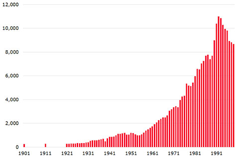
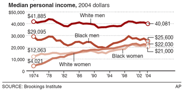
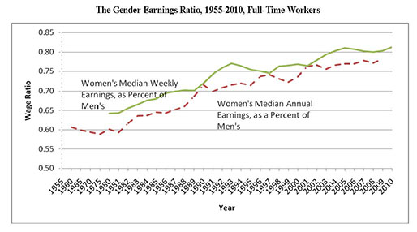

2013년 3월 3일
Please provide the paragraph you would like me to translate.
나는 여러 사람에게서 다음과 같은 이야기를 들었다. 6개월 전의 나 또한 그중 한 명이었다. “반동주의자(Reactionaries)를 자처하는 정말 똑똑한 사람들이 쓴 글들을 계속 읽고 있는데, 도대체 무슨 상황인지 전혀 모르겠어요. 그들이 하는 말은 도덕적으로 혐오스럽거나 완전히 터무니없어 보이거든요. 설명을 해달라고 요청하면, 내용은 복잡하고 그들의 아이디어를 한마디로 요약할 방법은 없다고만 해요. 그냥 요약글을 하나 쓰면 안 되는 걸까요?”
내 마음 한구석에서는 이러한 믿음들의 상당수가 논증이 아니라 시(poetry)이기 때문에 답을 내기 어려운 것이라고 은밀히 생각한다. 셸리(Shelley)의 《아도나이스(Adonais)》를 빠르게 요약해 보라. "음, 어떤 사람이 있는데, 그가 죽었고, 그래서 다른 사람이 매우 슬퍼한다." 이렇게 말하면 무언가 중요한 것이 누락되었다는 걱정이 든다. 고등 문화와 고결한 덕성이 존재했던 지나간 시대에 대해 리액션(Reaction, 반동주의)이 보내는 그 웅장하고 비가적인 찬가들을 빠르게 요약하려 시도해 보아도 마찬가지일 것이다.
하지만 내용이 아예 없는 것은 아니며, 그중 일부는 당혹스럽기까지 하다. 나는 멘시우스 몰드버그(Mencius Moldbug)의 여러 게시물 링크를 끊임없이 전송받은 끝에 리액션(Reaction)에 대해 조금씩 읽기 시작했고, 이후에는 (악명 높은 콘크비스타도르(Konkvistador)를 포함해) 이에 대해 질문을 던질 수 있는 몇몇 리액셔너리(Reactionaries)들이 모인 IRC 채널에서 시간을 보내기 시작했다. 당연히 이런 이력이 나를, 지금까지 그 누구도 시도하지 않았던 '모두에게 이를 설명하기'라는 프로젝트에 착수할 자격을 완벽히 갖춘 세계적인 전문가로 만들어 주었다.
좋다, 아마 아닐지도 모른다. 하지만 사실 나는 오랫동안 반동주의(Reactionary) 사상에 반대하는 논거를 제시하고 싶어 몸이 근질거렸으나, 마땅한 공격 대상이 없다는 점과 반동주의자가 아닌 사람들은 내가 그들과 대화하는 것만으로도 시간 낭비라고 생각할까 봐 걱정된다는 이중의 문제에 직면해 있었다. 그들의 아이디어를 요약해 보는 것은, 우선 그들의 생각이 무엇인지에 대한 기준점을 잡는 동시에, 왜 그들의 주장이 반박당해야 마땅하다고 내가 생각하는지를 더 명확히 보여줄 좋은 방법이 될 것 같다.
우선 메타 수준의 질문부터 시작해 보자. 즉, 우리 사회가 중요한 지점에서 이전 사회들보다 더 낫다고 얼마나 확신할 수 있는가 하는 문제다. 그다음에는 우리가 중요하게 생각하는 여러 차원에서 과거 사회와 비교했을 때 현재의 우리는 어떤 위치에 있는지 객체 수준에서 살펴볼 것이다. 또한 사회 정의 문제로 길게 곁가지를 뻗어, 일부 전통 사회가 이 분야에서 실제로 우리보다 더 깨어 있었음을 보여줄 것이다. 과거 사회를 긍정적으로 평가한 뒤에는, 그들의 문화와 정부, 종교의 어떤 측면이 그토록 성공적이었는지, 그리고 우리가 그것들을 현대 삶에 도입할 수 있을지를 살펴볼 것이다.
이 내용의 상당 부분은 매우 정치적으로 올바르지 않으며 불쾌하게 느껴질 수 있다. 왜냐하면 그것이 바로 반동주의자(Reactionaries)들이 하는 일이기 때문이다. 나는 이러한 아이디어들에 대해 관대한 태도를 취하려 노력했으며, 이는 곧 이 글이 정치적으로 올바르지 않고 불쾌한 입장들을 밀어붙이게 될 것임을 의미한다. 만약 이 글, 특히 인종에 대해 다루는 중간 부분들을 읽고 싶지 않다면 충분히 이해한다. 하지만 만약 이 글을 읽고 내가 실제로 이런 생각을 가지고 있다고 비난하며 분노한다면, 당신은 영원히 독해 능력 시험에서 낙제한 것이다.
원래는 내일 이어서 이러한 입장들에 반대하는 논거를 담은 글을 올릴 계획이었다. 하지만 이 논증을 쓰는 데 생각보다 시간이 오래 걸렸고, 반론을 작성하는 데도 마찬가지일 것 같다. 반동주의적 아이디어들을 비판하는 글은 앞으로... 일주일? 아니면 한 달쯤 뒤에 올라올 것으로 예상해 달라.
어쨌든, 이 글은 그런 내용이 아니다. 이 글은 현대 사회가 뼛속까지 썩어 문드러졌으며, 이에 대한 유일하고 합리적인 해결책은 제임스 2세(King James II)를 파내어 복제한 뒤, 그 복제 인간에게 모든 것에 대한 절대적인 통제권을 부여하는 것이라고 주장하는 글이다.
고대 사회의 사람들은 자신들의 사회가 분명히 위대하다고 생각했다. 제국 시대의 중국인들은 제국 중국을 이길 수 있는 것은 아무것도 없다고 생각했고, 중세 스페인인들은 중세 스페인이 완벽함의 독보적이고 인상적인 사례라고 생각했으며, 공산주의 소련인들은 소련 공산주의에 대해 상당한 자부심을 가졌다. 한편, 우리는 민주주의와 세속주의, 그리고 민족적 관용을 갖춘 21세기 서구 문명이 꽤 근사하다고 생각한다. 앞선 세 가지 사례가 이제는 가소로울 정도로 틀린 것으로 보이는 만큼, 우리가 마침내 정치 철학을 제대로 정립했다는 주장이 완전히 정당화되는 유일한 시대에 살고 있다는 가설에 대해서는 의심해 보아야 한다.
하지만 우리에게는 그들이 가지지 못한 이점이 있는 듯하다. 중국 제국에 반대하는 목소리를 냈다가가는 목이 날아간다. 스페인 국왕에게 반기를 들면 종교재판(Inquisition)에 회부된다. 동지 스탈린(Comrade Stalin)에 맞서 입을 열면 시베리아로 보내진다. 서구 자유민주주의의 위대한 점은 바로 '아이디어의 자유 시장'이 존재한다는 것이다. 모두가 우리 사회의 어떤 측면을 비판한다. 노엄 촘스키(Noam Chomsky)는 우리 사회를 비판하는 것으로 커리어를 쌓아 부와 명성을 얻었고, 안락한 교수직까지 꿰찼다. 즉, 우리의 강점은 사회의 불완전함을 인정하고, 이를 지적하는 이들에게 보상을 주며, 그렇게 함으로써 완벽한 정부라는 이상향에 조금씩 더 가까이 다가간다는 점에 있다.
자, 잠시 뒤로 돌아가 보자. 당신이 스탈린 시대의 러시아로 돌아가서 이렇게 말했다고 가정해 보자. “있잖아요, 사람들이 동지 스탈린을 충분히 존경하지 않는 것 같아요. 이 나라에는 스탈린주의가 부족합니다! 제 생각엔 스탈린이 두 명은 더 필요해요! 아니, 쉰 명쯤 있어야 합니다!”
축하한다. 당신은 스탈린 시대의 러시아에서 정부를 비판하면서도 완벽하게 무사히 빠져나갈 방법을 찾아냈다. 운이 좋다면, 그 안락한 교수직까지 꿰찰지도 모를 일이다.
만약 당신이 사회가 지금 하고 있는 일을 정확히 그대로, 다만 훨씬 더 강하게 밀어붙이라고 말함으로써 사회를 "비판"한다면, 사회는 당신을 아군으로 인식하고 당신이 "대담한 우상 파괴자"라거나 "용기 있고 혁명적인 새로운 아이디어를 가졌다"는 식의 찬사를 보내며 보상할 것이다. 당신이 정말로 곤경에 처하는 순간은, 그들이 실제로 듣고 싶어 하지 않는 말을 내뱉었을 때뿐이다.
서구 사회는 적어도 지난 수백 년 동안 점진적으로 좌클릭해 왔다. 왕권신수설에서 입헌군주제로, 다시 자유지상주의적 민주주의에서 연방제 민주주의로, 그리고 뉴딜 민주주의를 거쳐 시민권 운동과 사회민주주의, 그리고 그 너머의 ???로 나아갔다. 이렇게 좌측으로 밀려가는 사회의 흐름에 합류해 "여러분, 제 생각엔 더 빨리 왼쪽으로 가야 할 것 같습니다! 두 배 더 빨리요! 아니, 쉰 배 더 빨리 말입니다!"라고 외친다면, 사회는 당신을 대담한 혁명적 우상파괴자로 부르며 교수직을 제안할 것이다.
만약 당신이 엔진이 가리키는 방향과 정반대 방향으로 기수를 틀어 이동해야 한다고 제안하기 시작한다면, 그때서야 당신은 꽤나 곤란한 상황에 처하게 될 것이다.
한번 해보라. 지난 한두 세기 동안 이루어진 어떤 일을 되돌려야 한다고 말해보는 것이다. 여성 참정권을 폐지하자고 하거나, 장애인과 지적 장애인에 대한 강제 불임 시술로 돌아가자고 제안해 보라. 만약 이 정도로도 확신이 서지 않는다면, 인종 격리 제도의 재도입이나 노예제는 어떻겠느냐고 제안해 보라. 그러면 표현의 자유가 당신을 어디까지 보호해 주는지 알게 될 것이다.
미국에서 이런 행동을 했다가는 직장에서 해고당하고 거의 모든 이들에게 외면받게 될 것이다. 얼마나 요란하게 행동하느냐에 따라, 사람들이 당신의 집 앞에서 피켓 시위를 벌이거나, 물건을 던지거나, 혹은 당신에게 폭력을 행사할 수도 있다. 그리고 사법부는 가해자들이 분명히 도발당했을 것이라며 그들의 행위를 정당화해 줄 것이다. 시베리아로 유배된 반체제 인사라는 상징적인 이미지에도 불구하고, 소련이 그들의 우상 파괴자들 대부분을 처리했던 방식 또한 바로 이러했다.
만약 당신이 기어코 투옥이라는 수단을 고집한다면, 언제든 유럽으로 가면 된다. 그곳에는 당신의 욕구를 충족시키고도 남을 만큼 충분한 '혐오 표현(hate speech)' 관련 법들이 명문화되어 있으니까. 하지만 명백한 국가 폭력이 수반되지 않는 억압 체제라고 해서, 그렇지 않은 체제와 결과적으로 큰 차이가 있는 것은 아니다. 단지 더 효율적이고 타도하기 어려울 뿐이다.
리액션(Reaction)은 음모론이 아니다. 조직적인 억압을 위한 비밀 캠페인이 존재한다고 주장하는 것이 아니라는 뜻이다. 반대 진영의 예를 빌려오자면, 이는 가부장제(patriarchy)와 더 유사한 개념이다. 가부장제라고 해서 실제로 남성들을 조정하며 여성들을 억압하도록 지휘하는 '가장'이 존재하는 것은 아니다. 그저 수많은 사람이 매우 강력한 문화적 규범을 공유할 때, 새로운 아이디어를 거부하는 일종의 면역 체계처럼 스스로 조직화되는 것뿐이다. 그리고 서구 사회는 마침 매우 강력한 진보주의적 면역 체계를 갖추고 있어서, 당신이 충분히 진보적이지 않은 말을 내뱉는 순간 당신을 집어삼킬 준비가 되어 있다.
결국 현대 자유민주주의와 과거의 억압적 사회의 결정적인 차이는, 과거의 사회는 당신이 좋아하는 것들을 억압했지만, 현대 자유민주주의는 당신이 싫어하는 것들만 억압한다는 점이다. 당신이 싫어하는 것들만 억압당하는 상태는, 내부에서 보기에는 억압이 전혀 없는 상태와 매우 흡사해 보인다.
중세 스페인의 독실한 가톨릭 신자는 이웃이 종교재판소(Inquisition)에 끌려가는 순간에도 자신이 억압받고 있다고 느끼지 않는다. 그녀가 느끼기에, 제대로 된 사람들이라면 자신이 원하는 성인을 숭배할 완전한 자유, 원하는 성당 어디든 갈 수 있는 완전한 자유, 다음 주교가 누가 되어야 할지 토론할 완전한 자유를 누리고 있다. 아, 그리고 우리 모두를 지옥으로 떨어뜨리려는 저 미친 사람들을 처리해 줄 누군가가 곁에 있다는 사실에 그저 감사할 뿐이다. 우리 중세 스페인 사람들은 균형의 오류(balance fallacy)에 빠지기에는 너무나 똑똑하니까!
당신은 억압적인 사회의 시민이므로, 활발한 억압이 일어나고 있는 분야와 관련된 주제라면 학교, 언론, 그리고 대중 서적을 통해 얻는 모든 정보를 극도로 회의적으로 바라봐야 한다. 이는 최소한 정치, 역사, 경제, 인종, 그리고 젠더 분야를 의미한다. 특히 "신선한 충격"이라거나 "지배적인 편향에 맞서는 훌륭한 대안"이라는 찬사를 받는 책들을 각별히 경계해야 한다. 언론의 찬사를 받는 책들은 아마도 "스탈린이 쉰 명은 더 필요하다!" 같은 부류일 가능성이 높기 때문이다.
이것은 들리는 것만큼 결코 피해망상적인 주장이 아니다. 인종은 우리 문화에서 가장 금기시되는 주제이기에, 동시에 가장 단순한 예시가 될 것이다. 인종에 관한 거의 모든 하드 데이터는 대학의 사회학 프로그램, 즉 나라에서 가장 진보적인 기관 내에서도 가장 진보적인 학과들로부터 나온다. 이러한 사회학과의 대부분은 인종차별과 싸우는 것을 명시적인 설립 목적으로 삼고 있다. 인종을 연구하는 많은 사회학자는 자신이 특별히 보수가 높거나 명성이 있는 분야도 아닌 이 길에 들어선 이유가 인종차별이라는 악에 맞서 성전을 치르기 위해서였다고 아주 솔직하게 말하곤 한다.
화이저(Pfizer)의 약물에는 부작용이 없다는 것을 증명하는 것이 사명이며, 직원 모두가 화이저 약물에 부작용이 있다고 믿는 악습에 맞서 싸우기 위해 특별히 약리학에 투신한 화이저 연구소가 있다고 상상해 보라. 이 연구소가 최신 화이저 약물의 부작용이 전혀 없다는 연구 결과를 당신에게 건네며, 제발 우리를 믿으라고 말한다고 가정해 보자. 당신이 그 약을 복용할 가능성이 단 조금이라도 있겠는가?
우리는 수많은 의학 연구, 특히 제약회사가 수행하는 연구들이 단순히 '서랍 효과(file-drawer effect, 긍정적인 결과만 발표하고 부정적인 결과는 숨기는 경향)' 때문에 잘못된 답을 내놓는다는 사실을 알고 있다. 즉, 모두가 듣고 싶어 하는 흥미로운 결과가 나온 연구는 출판되지만, 실망스러운 결과가 나온 연구는 출판되지 않는다는 것이다. 과학자가 학술지에 제출하지 않았거나, 학술지 측에서 게재를 거부했기 때문이다. 이를 방지하기 위한 안전장치가 계속 늘어남에도 불구하고 의학 연구에서 이런 일이 항상 일어나고 있다면, 사회학 연구에서는 얼마나 자주 이런 일이 벌어지고 있을 것 같은가?
평균적인 사회학자가 인종차별적 믿음이 옳다는 증거가 나타날 가능성이 가장 높은 연구 설계를 선택할 것 같은가, 아니면 그 반대의 결과가 나올 가능성이 가장 높은 설계를 선택할 것 같은가? 만약 그녀가 최선을 다했음에도 불구하고 연구 결과 인종차별적 믿음이 옳다는 증거가 발견되었다면, 그녀가 자신의 이름을 걸고 그 결과를 모두가 볼 수 있게 주요 학술지에 제출할 것이라고 생각하는가? 그리고 만약 어떤 기괴한 우연으로 그녀가 그것을 제출했다 하더라도, 우리는 인종차별을 혐오하므로 인종차별주의자들이 얼마나 멍청한지 증명하는 연구들을 게재하는 국제 학술지(International Journal Of We Hate Racism So We Publish Studies Proving How Dumb Racists Are)가 기쁘게 다음 호에 그 논문을 실어줄 것이라고 생각하는가?
따라서 사람들이 "현대 과학은 인종주의가 틀렸음을 완전히 입증했으며, 이를 뒷받침할 증거는 단 한 조각도 없다"라고 승리감에 도취해 말할 때, 우리는 그 증명의 수준이 1900년대의 어떤 이가 "현대 과학은 인종주의가 옳음을 완전히 입증했으며, 이를 반박할 증거는 단 한 조각도 없다"라고 말했던 것과 정확히 같은 수준이라는 점을 고려해야 한다. 이 분야는 여전히 자신의 독단적인 의견을 밀어붙이며 그것을 과학이라 부르는 사람들로 이루어져 있을 뿐이다. 단지 그 독단의 내용이 바뀌었을 뿐이다.
반동주의자(Reactionaries)들이 인종에 대해 이야기하기를 좋아하긴 하지만, 결국 인종이란 특히 강력하고 명백한 금기(taboo)에 불과하다. 역사학, 경제학, 정치학에도 금기는 존재하며, 비록 인종만큼 명백하거나 흥미롭지는 않더라도 해당 분야의 결과물을 분석할 때 동일한 회의론이 필요하다는 점은 마찬가지다. "하지만 모든 정통 과학자가 이 특정한 반동주의적 믿음에 반대합니다!"라는 말은, "하지만 모든 정통 대주교가 이 특정한 이단설에 반대합니다!"라는 말과 동일한 억양으로 읽어야 한다.
이 글은 인종차별이 옳다는 증거가 되려는 것도 아니며, 그 가설을 뒷받침하는 아주 작은 단서라도 제공하려는 의도도 아니다(물론 실제로 많은 반동주의자들이 지독한 인종차별주의자인 것은 사실이다). 스페인 종교재판(Spanish Inquisition)이 실제로 몇 명의 사탄 숭배자를 찾아냈을 것이고, 아마 진짜 살인범이나 강간범 몇 명이 시베리아로 보내졌을 것이다. 아주 드물게, 정부가 우연히 틀린 생각마저 검열하는 경우도 있을 것이다. 하지만 무언가가 검열되고 있다는 사실을 아는 것은 여전히 유용하다. 그래야만 이야기의 한쪽 편에 대한 증거가 없다는 사실을 두고, 그쪽 사람들이 입을 다물 만큼 영리했다는 점 외에 다른 무언가의 증거라고 착각하지 않을 수 있기 때문이다.
그렇다 하더라도, 현대 사회가 과거의 사회들보다 더 낫다는 증거는 거의 압도적이지 않은가? 우리는 더 부유하고, 더 안전하며, 더 건강하고, 더 교육받았으며, 더 자유롭고, 더 행복하며, 더 평등하고, 더 평화로우며, 더 인도적이다. 이러한 주장에 대한 반동주의적 응답은 크게 세 가지 범주로 나눌 수 있을 것이다.
첫 번째 범주는 "그렇다, 당연히"이다. 대부분의 국가는 1700년 이후로 약 100배 정도 더 부유해진 것으로 보인다. 질병률은 급락했고 기대 수명은 크게 늘어났다. 비록 그 이유가 주로 영아 사망률의 변화 때문이긴 하지만 말이다. 하지만 이는 전적으로 기술의 발전으로 설명 가능하다. 즉, 우리는 1700년보다 100배 더 부유해졌다. 무엇으로 말인가? 금과 다이아몬드? 아마도 오늘날 우리가 다음과 같은 장비로 금광을 캐고 있다는 사실과 관련이 있을 것이다.
…그리고 1700년대에 그들은 이런 도구 중 하나로 금광을 파야 했다:
마찬가지로, 오늘날의 인류가 더 건강한 이유는 컴퓨터를 이용해 건강한 조직은 보존하면서 암세포만 정확히 타격하는 방사선 조사량을 계산할 수 있기 때문이다. 반면 1700년대 의료 기술의 정점은 거머리였다.
이러한 기술적 배당은 예상치 못한 곳에서도 나타난다. 오늘날 세상은 더 평화로워졌지만, 그중 얼마나 많은 부분이 전쟁을 수익성 없게 만드는 글로벌 무역 네트워크, 모든 사상자를 영상으로 보도하여 전쟁을 비인기하게 만드는 미디어, 그리고 전쟁에서 승리하는 것을 불가능하게 만드는 핵무기 및 기타 무기들의 존재 덕분일까?
두 번째 범주는 “아, 정말로?”이다. 안전 문제를 예로 들어보자. 이는 멘시우스 몰드버그(Mencius Moldbug)가 특히 관심을 갖는 주제 중 하나인데, 그는 1876년에 쓰인 범죄학 문헌에서 다음과 같은 구절을 인용하곤 한다.
한편, 우리가 역사를 알고 있는 그 어떤 국가에서도, 현재의 영국만큼 생명과 재산이 안전했던 시기는 없었다고 단언해도 무방할 것이다. 이러한 안전함은 도시와 농촌을 가리지 않고 거의 모든 곳에 퍼져 있으며, 이는 이번 세기 초반까지만 해도 팽배했던 불안감과 극명한 대조를 이룬다. 물론 대부분의 대도시에는 여전히 폭행과 강도가 간혹 발생하는 악명 높은 구역들이 존재한다. 과거의 도피처(sanctuaries)나 그와 유사한 은신처들의 전통이 여전히 희미하게 남아 있을지도 모른다. 하지만 평균적인 체격과 힘을 가진 사람이라면, 낮이든 밤이든 언제라도, 가장 거대한 도시와 그 외곽, 대로와 인적이 드문 시골길을 홀로 걸어 다녀도, 스스로 위험을 자초하지 않는 한 위험하다는 생각조차 전혀 하지 않을 것이다.
그러면 몰드버그(Moldbug)는 보통 이 상황을, 그가 최근 흥미롭게 읽은 뉴스 기사 속 풍경과 대조하곤 한다. 경찰조차 들어가기를 두려워하는 도심 속 빈민가, 갱단 간의 교전 중에 무참히 살해당하는 십 대들, 대낮에 벌어지는 무작위 살인, 그리고 21세기 영국 게토(ghetto) 생활이 선사하는 그 모든 '즐거움'들에 관한 기사 말이다.
물론 일화의 복수형이 곧 데이터가 되는 것은 아니지만, 영국의 범죄 통계는 그의 말이 옳았음을 뒷받침하는 듯하다.

만약 이것이 사실이라면, 이는 기술의 발전 에도 불구하고 벌어진 일이다. 실제로 범죄율이... 글쎄, 적어도 100배는 증가한 것으로 보이는데... 이는 국가 전체가 훨씬 더 부유해졌음에도, 그리고 이제는 CCTV와 DNA 검사, 경찰 데이터베이스가 존재함에도 벌어진 일이다. 젠장, 1876년에는 지문 채취법조차 아직 고안되지 않았을 때였다.
이는 빅토리아 시대의 사회, 정치, 혹은 정부에 내재된 어떤 요소가 당시의 영국을 현대의 진보적인 영국보다 더 살기 안전한 곳으로 만들었음을 시사한다.
교육 또한 우리가 훨씬 더 잘하고 있다고 확신하는 또 다른 사례다. 자, 1899년 하버드(Harvard) 입학시험을 한번 살펴보자. 계산기는 없었다는 점을 기억하라. 아직 발명되기 전이었으니까.
내 SAT 점수는 오늘날 하버드 대학생의 평균보다 훨씬 높다(고등학교 시절에 게으름을 피웠기 때문에 결국 하버드에 들어가지는 못했다). 하지만 지금의 나라면 그 시험의 상당 부분을 시작조차 할 수 없을 것이다.
좋다, 그렇다고 치자. "물론 오늘날 우리가 라틴어와 그리스어, 산술, 기하학, 지리학을 가치 있게 여기지 않는 건 당연하다. 우리는 이제 다른 것들에 가치를 두니까"라고 주장해 보라. 좋다. 그렇다면 지금의 고등학생들이 배우는 것 중, 19세기 하버드(Harvard) 학생들이 그 시험을 완벽하게 통과하며 200배는 더 잘 알았을 그 내용만큼이나 어렵고 인상적인 것이 대체 무엇인지 말해 보라 (제발 "제2차 세계대전 이후의 유럽사" 같은 소리는 하지 말고).
그 시험이 공정한 능력 평가가 될 수 있었던 당시의 학생층이, 오늘날 입시 시험이라 불리는 '독해' 문제들을 보고 당황했을 것 같은가? 오히려 "선생님, 죄송하지만 뭔가 착오가 있었던 것 같습니다. 제 시험지가 영어로 되어 있네요"라고 말하는 쪽에 더 가깝지 않았을까.
재미 삼아 위키피디아의 미국 대통령 중 다국어 구사자 목록을 한번 읽어보자. 우선 다음과 같은 항목부터 시작된다.
토머스 제퍼슨(Thomas Jefferson)은 여러 외국어를 읽을 줄 알았다. 1817년 4월 12일 필라델피아의 출판업자 조셉 델라플레인(Joseph Delaplaine)에게 보낸 편지에서, 제퍼슨은 그리스어, 라틴어, 프랑스어, 이탈리아어, 스페인어, 그리고 영어까지 총 6개 국어로 읽고 쓸 수 있다고 주장했다. 그가 사망한 후 제퍼슨의 서재에서는 다양한 언어로 된 여러 권의 책과 사전, 문법서들이 발견되었는데, 이는 그가 능숙하게 구사하고 썼던 언어들 외에도 추가로 공부한 언어들이 있었음을 시사한다. 그중에는 아랍어, 게일어, 웨일스어로 된 책들이 포함되어 있었다.
그리고 이것도:
존 퀸시 애덤스(John Quincy Adams)는 프랑스와 네덜란드에서 모두 수학했으며, 프랑스어는 유창하게, 네덜란드어는 일상 회화 수준으로 구사했다. 애덤스는 평생에 걸쳐 네덜란드어 실력을 향상시키려 노력했으며, 때로는 언어 숙달을 돕기 위해 하루에 한 페이지씩 네덜란드어를 번역하기도 했다. 그가 번역한 공식 문서들은 미국 국무장관에게 송부되었는데, 이는 애덤스의 공부가 실용적인 목적에도 기여하도록 하기 위함이었다. 아버지가 그를 프로이센(Prussia) 주재 미국 대사로 임명했을 때, 애덤스는 양국 관계를 강화하는 데 필요한 도구를 갖추기 위해 독일어에 능통해지는 데 전념했다. 그는 독일어 기사를 영어로 번역하며 실력을 쌓았고, 이러한 학습 덕분에 그의 외교적 노력은 더 큰 성과를 거둘 수 있었다. 유창하게 구사했던 두 언어 외에도 그는 이탈리아어를 공부했으나, 말하기와 듣기를 연습할 상대가 없었기에 진전이 거의 없었음을 인정했다. 또한 애덤스는 라틴어를 매우 잘 읽어 매일 한 페이지의 라틴어 텍스트를 번역했으며, 여가 시간에는 고전 그리스어를 공부했다.
결국 이번 글과 더 유사한 성격의 항목들로 나아가게 된다.
조지 W. 부시(George W. Bush)는 스페인어를 어느 정도 구사하며, 실제로 그 언어로 연설을 하기도 했다. 그의 스페인어 연설은 완벽하지 않았고, 중간중간 영어가 섞여 있었다. 몰리 아이빈스(Molly Ivins) 같은 일부 평론가들은 그가 여러 차례의 등장에서 비슷한 문구만을 반복했다는 점을 지적하며, 그가 실제로 어느 정도까지 그 언어를 구사할 수 있는지에 대해 날카로운 의문을 제기했다.
그리고 이것도:
버락 오바마(Barack Obama) 본인은 외국어를 전혀 못 한다고 주장한다. 하지만 수실로 밤방 유도요노(Susilo Bambang Yudhoyono) 인도네시아 대통령에 따르면, 오바마는 전화 통화 중에 "유창한 인도네시아어"로 간단한 네 단어짜리 질문을 던졌으며, 몇 가지 인도네시아 음식 이름도 언급할 수 있었다고 한다. 그는 스페인어도 조금 알지만, 겨우 "15단어" 정도만 알 뿐이며 언어 구사 능력이 형편없다는 점을 인정한다.
진정한 반동주의자(Reactionary)라면 옛날 미국 대통령들조차 충분히 '옛날 사람'이 아니며, 우리가 정말로 주목해야 할 대상은 영국 귀족 사회라고 분명히 지적하겠지만, 이 부분은 독자의 몫으로 남겨두기로 한다.
그들의 귀족층이 우리의 상류층보다 더 교육받았을지는 모르나, 우리는 하류층에 교육이 훨씬 더 널리 보급됨으로써 그 불균형을 상쇄하고 있다고 주장할 수도 있을 것이다. 나 역시 이 입장에 동의한다. 그리고 분명 수백 명의 도심 소수민족 청소년들도 내 생각과 같을 것이다. 그들은 학교 교육을 통해 추상적인 정치 철학에 대한 엄청난 관심을 갖게 되었기에, 의심의 여지 없이 지금 이 블로그 포스트를 읽고 있을 테니까.
오늘날 우리에게는 다시금 위키피디아(Wikipedia)와 인터넷, 그리고 아마존(Amazon)이 공급하는 수많은 저렴한 책들이 있다. 옛날 사람들은 지역 도서관에서 구할 수 있는 것에 만족해야만 했다. 더욱 당혹스러운 점은, 오늘날 우리가 엄청난 우위를 점한 상태에서 시작한다는 것이다. 플린 효과(Flynn Effect) 덕분에 우리의 평균 IQ는 1900년대보다 10에서 20점 정도 높아졌다. 하지만 이러한 거대한 기술적, 생물학적 선점 효과가 있음에도 불구하고, 우리는 여전히 옛날보다 못한 성과를 내고 있다. 이는 이 지점에서도 옛날 방식이 어떤 종류의 사회적/정치적 이점을 가지고 있었을지도 모른다는 점을 시사한다.
따라서 부, 건강, 평화 등 우리가 현재 더 우월하다고 주장해 온 여러 요소는 그저 기술 수준이 높아진 결과물임이 드러났다. 안전과 교육 같은 다른 몇 가지 주장들은 그냥 완전히 틀린 것으로 판명되었다. 이제 남은 것은 몇 가지 정치적 이점뿐이다. 즉, 우리가 더 자유롭고, 인종차별과 성차별이 덜하며, 덜 맹목적이고, 더 인도적이라는 점이다. 그런데 서론에서 이미 이 "자유"라는 개념 전체에 구멍을 뚫기 시작했다.
이제 관용과 평등, 그리고 인도주의 측면에서 우리가 이룬 진보가 남았다. 과연 이러한 승리들이 우리가 생각하는 것만큼 인상적인 성과일까?
[트리거 경고: 여기부터 인종차별 관련 내용이 포함된 부분이다]
사회과학 분야에서 가장 견고한 결과 중 하나는 집단 간의 성과 차이가 크고 지속적으로 나타난다는 점이다. 주목할 만한 것은, 이러한 차이들이 '상태의 좋고 나쁨'에 따라 매우 밀접하게 상관되어 있다는 사실이다. 어떤 집단은 우리가 여러 방면에서 "좋은 결과"라고 간주하는 지표들을 가지고 있는 반면, 다른 집단은 여러 방면에서 "나쁜 결과"라고 간주하는 지표들을 가지고 있다. 범죄율, 약물 사용, 십대 임신, IQ, 교육 수준, 중위 소득, 신체 건강, 정신 건강, 그리고 그 외에 당신이 측정하고자 하는 그 무엇이든 말이다.
이 결과에 대한 가장 훌륭한 제시물은 스피릿 레벨(The Spirit Level)이다. 비록 그 책은 스스로가 완전히 다른 무언가를 증명하고 있다고 생각하고 있지만 말이다. 하지만 이 분야와 조금이라도 관련이 있는 연구라면 거의 다 동일한 효과를 보여줄 것이다. 이는 우리가 국가를 '제1세계'와 '제3세계'로 나누고, 인종을 '특권층'과 '피억압층'으로 나누는(즉, "글쎄, 어떤 인종은 특정 분야에서 좋은 성과를 내고, 다른 인종은 또 다른 분야에서 좋은 성과를 내니, 기본적으로는 다 상쇄된다"라고 보는 대신에) 직관의 배경이 되는 것이기도 하다. 이 부분에 대해서는 큰 논란이 없을 것이라 생각한다. 원인에 대해 최대한 불가지론적인 태도를 유지하기 위해, 이 신비로운 특성을 '운'이라고 부르기로 하자.
집단 간의 운의 차이를 설명하기 위해 제안된 가설은 크게 세 가지 범주로 나뉜다. 바로 외부적 요인, 문화적 요인, 그리고 생물학적 요인이다.
외부주의자들은 집단 간의 차이가 오직 그들이 처한 상황 때문에 발생한다고 주장한다. 때로는 이러한 상황이 자연적인 요인에 기인하기도 한다. 제러드 다이아몬드(Jared Diamond)는 그의 저서 『총, 균, 쇠(Guns, Germs, and Steel)』에서 자연주의적 외부주의 가설에 대해 설득력 있는 논거를 제시한다. 중국인들은 가축화할 동물과 식물이 풍부하고 새로운 아이디어를 배울 수 있는 무역로가 많은 비옥한 농경지에 자리 잡았다. 반면 뉴기니 원주민들은 유용한 동식물이 거의 없는 울창한 정글 속에서 외부 세계와 완전히 단절된 채 살아가야 했다. 그 결과 중국은 강력한 문명을 발전시켰고, 뉴기니인들은 역사의 각주로 남게 되었다.
하지만 현대에 이르러 외재주의자들은 식민주의나 억압 같은 외부적인 인간적 조건에 더 집중하는 경향이 있다. 백인들이 운이 좋은 것은 어떤 내재적인 미덕 때문이 아니라, 남들보다 먼저 시작했다는 점과 수적 우위를 점했다는 점, 그리고 이를 이용해 다른 사회 집단에게는 허용하지 않는 특권을 스스로에게 부여했기 때문이다. 흑인들이 운이 없는 것 또한 어떤 내재적인 결함 때문이 아니라, 그들을 억압하고 짓누르기 위해 수단과 방법을 가리지 않는 백인들 틈에 끼어 있게 되었기 때문이다. 이는 인종차별로 인해 불운한 인종이 특권을 박탈당하는 사회 내부의 상황과, 불운한 국가들이 식민주의의 참상을 겪는 사회 간의 상황 모두에 해당한다.
문화주의자들은 운이라는 것이 서로 다른 집단이 보유한 암묵적인 전통과 신념의 집합에 기반한다고 주장한다. 중국인들이 뛰어났던 것은 비옥한 토지 덕분뿐만 아니라, 그들의 문명이 학문과 부의 축적, 그리고 비폭력을 가치 있게 여겼기 때문이라는 것이다. 뉴기니인들은 그보다 덜 유용한 가치관을 가졌을 것이며, 아마도 고대 전통에 대한 엄격한 순응을 요구했거나, 폭력을 조장했거나, 혹은 협력을 저해하는 가치관이었을 것이라고 본다.
외부주의자들과 마찬가지로, 이들은 이러한 흐름을 현재까지 추적하며 중국 문명을 건설하는 데 그토록 큰 도움이 되었던 가치들이 오늘날의 중국을 강하게 유지시키고 있으며, 말레이시아나 미국 같은 국가로 이주한 중국인 이민자들이 성공을 거두게 만드는 원동력이 되었다고 주장한다. 반면, 뉴기니(New Guinea)는 여전히 빈곤 상태에 머물러 있으며, 뉴기니 출신 이민자에 대해 들어본 적은 없으나 그들이 큰 성공을 거둘 것이라고 기대하지는 않는다.
이보다 덜 어색한 용어가 떠오르지 않는 '생물학주의자(biologicalists)'들은 아마도 가장 악명 높으며, 설명이 가장 적게 필요한 부류일 것이다. 이들은 집단 간의 운의 차이를 유전적 요인으로 돌리는 것으로 가장 유명하지만, 분명 더 미묘한 이론들도 존재한다. 가장 흥미로운 이론 중 하나는 기생충 부하(parasite load)인데, 기생충이 많은 지역일수록 신체가 이를 퇴치하는 데 더 많은 에너지를 소비하게 되어 완전한 신경학적 발달에 쓰일 에너지가 줄어든다는 생각이다. 이를 단일 지역 내의 집단 간 차이(예를 들어 미국 내 인종 간 차이)로 확장해 설명하기는 어렵지만, 어떤 이들은 분명 용감한 시도를 해왔다. 그럼에도 불구하고, 생물학주의자들을 그냥 "어느 정도 인종주의자들"이라고 생각하는 것이 아마 타당할 것이다.
그렇다면 누구의 말이 맞는 것일까?
지난 수년간 벌어진 상당수의 정치적 다툼은 보수주의자들과 자유주의자들 사이의 갈등이었던 것으로 보인다. 전자가 문화주의적 관점과 생물학적 관점이 모호하게 섞인 입장을 취했다면, 후자는 외재주의적 관점을 열렬히 수용했다.
하지만 외재주의적 관점에는 심각한 결함이 있다. 이 블로그에서 다른 논점을 위해 이미 이 그래프를 인용한 적이 있지만, 이제 우리가 '반동주의자 모자(Reactionary Hat)'를 썼으니 다시 한번 살펴보자.

1974년부터 (거의) 현재까지의 흑백 간 소득 격차 추이는 다음과 같다. 그 세월 동안 흑인에 대한 백인의 억압은 급격히 감소했다. 완전히 사라진 것은 아니지만, 분명히 줄어들었다. 그런데도 소득 격차는 정확히 그대로다. 이를 억압받던 다른 집단이 갑자기 덜 억압받게 된 또 다른 사례와 비교해 보자.

같은 기간 동안, 남성의 여성 억압이 감소하면서 여성의 소득은 분명하고 지속적인 상승세를 보였다. 이는 여성의 저소득 원인이 외부적 요인에 있다는 외재주의적 가설(externalist hypothesis)이 적어도 부분적으로는 옳았음을 시사한다. 하지만 여기서 도출되는 명백한 당연한 결과는, 인종 간 소득 격차에 대한 외재주의적 가설에는 의구심이 생긴다는 점이다.
사실 모든 인종이 인종 간 소득 격차를 겪는 것은 아니며, 격차가 존재하는 경우라도 외부주의적 이론(externalist theory)이 예측하는 방향으로 나타나는 것도 아니다. 유대인과 아시아인들은 미국에 처음 왔을 때 경악스러울 정도의 차별에 직면했으나, 두 집단 모두 빠르게 회복했으며 현재는 평균적인 백인 미국인보다 훨씬 더 잘 살고 있다. '유대인 음모론'이라는 생각은 반유대주의적이고 어리석은 것이기에 당연히 조롱받아 마땅하지만, 이는 외부주의적 가설—즉, 인종 간 성공의 차이는 언제나 억압 때문이어야만 한다는 생각—을 논리적 결론까지 밀어붙였을 때 도달하게 되는 결과일 뿐이다.
사실 유대인과 중국인은 흥미로운 사례다. 두 집단 모두 전 세계에 널리 퍼져 있고, 종종 매우 적대적인 국가에 처하게 되지만, 어디를 가든 보통 현지인보다 더 성공적인 삶을 살기 때문이다(소득 및 교육 통계 자료는 요청 시 제공 가능하다). 말레이시아의 중국인이든 프랑스의 유대인이든, 이들은 끊임없는 차별 속에서도 이례적으로 성공하는 경향을 보인다. 만약 이것이 문화주의적 관점과 외부주의적 관점을 구분하기 위한 실험이라면, 매우 훌륭하게 재현된 실험이라 할 수 있다.
이민자 집단 간의 이러한 성공 차이는 흔히 그들이 온 국가의 성공 여부와 밀접한 상관관계를 보인다. 일본은 매우 부유하고 선진적이며, 유럽은 상당히 부유하고 선진적이다. 라틴아메리카는 그만큼 부유하거나 선진적이지 않으며, 아프리카는 그중에서도 가장 가난하고 낙후되어 있다. 실제로 일본계 미국인이 유럽계 미국인보다, 유럽계 미국인이 라틴계 미국인보다, 그리고 라틴계 미국인이 아프리카계 미국인보다 더 잘 산다는 사실을 알 수 있다. 백인들이 이토록 정밀한 방식으로 차별의 수위를 조절해 왔다는 점은 꽤 놀라운 일이다. 특히 그 차별의 대상에 자기 자신들까지 포함되어 있다는 점을 생각하면 더욱 그렇다.
그리고 집단 간의 많은 차이는 억압에 저항적일 것이라고 예상되는 영역에서 나타난다. 불운한 집단은 유사한 경제적 계층을 비교했을 때조차 십대 임신율이 더 높고, 약물 사용이 더 많으며, 집단 내 폭력이 더 심한 경향이 있다. 즉, 연봉 6만 달러를 버는 중국계 미국인과 연봉 6만 달러를 버는 아프리카계 미국인에 집중한다면, 중국계가 현저히 더 나은 결과를 보일 것이다(나는 교육 분야에서 이런 연구가 수행된 것을 보았으며, 다른 분야에서도 마찬가지일 것이라 예상한다). 동일한 경제적 계층에서 표본을 추출하면 빈곤한 시작 조건이나 열악한 동네에 거주함으로써 발생하는 효과는 걸러지며, 억압적인 다수자가 이러한 집단들 사이에서 학교 출석률의 차이를 만들어낼 수 있는 다른 방법을 찾아내기란 (물론 불가능한 것은 아니지만) 매우 어렵다.
따라서 운의 차이는 때때로 억압받는 소수자에게 유리하게 작용하며, 소수자에 대한 억압이 줄어든다고 해서 감소하지도 않는다. 또한 억압의 정도가 천차만별인 여러 사회 전반에서 밀접한 상관관계를 보이며, 억압이 그럴듯한 기제로 작용하기 어려운 영역에서도 나타난다. 제러드 다이아몬드(Jared Diamond) 식의 자연적 요인들의 집합으로서의 외인론적 가설은 나름의 가치가 있을지 모르나, 현대의 집단 간 차이를 억압에 기반해 설명하려는 시도로서는 처참하게 실패한 가설이다.
생물학적 가설에 대해 너무 깊이 파고들고 싶지는 않다. "내가 동의하지 않는 가설을 명확히 설명해 보겠다"는 식의 접근이라 하더라도, 왠지 모르게 소름 끼치는 구석이 있기 때문이다. 다만 이 가설이 설명하지 못하는 부분이 많다는 점은 언급하고 넘어가겠다. 운의 차이가 이토록 극명하게 나타나는 많은 '집단'들이 사실 생물학적 집단이 아니라, 몰몬교(Mormons)나 시크교(Sikhs) 같은 종교적 집단인 경우가 많으며, 이들은 모두 자신들이 기원한 인구 집단과는 확연히 다른 결과를 보이기 때문이다. 심지어 생물학적으로 차이가 있는 많은 집단조차 그 차이가 충분하지 않다. 영국인과 아일랜드인은 운의 차이가 매우 크지만, 이를 인도-유럽어족(Indo-European)이라는 거대한 나무의 정확히 어느 작은 가지에서 갈라져 나왔느냐 하는 차이로 돌리는 것은 형편없는 설명처럼 보인다 (물론 콘크비스타도르(Konkvistador)는 이 점에 대해 나와 의견이 다르다).
그럼에도 불구하고, 생물학적 가설을 명백히 멍청하고 완전히 신뢰를 잃은 이론이라며 일축하는 사람들(사실상 모든 사람을 말한다)은 그 가설을 제대로 평가하지 않고 있는 것이다. 생물학적 가설에 대한 호의적이면서도 놀라울 정도로 인상적인 옹호론을 보고 싶다면 이 미발표(그리고 출판 불가능한) 리뷰 논문을 추천한다. 덧붙여, 나는 해당 논문을 종합적으로 격파한 글(가급적이면 철저한 피스킹(fisking, 논리의 허점을 조목조목 파헤치는 비판) 형태의 글)에 매우 관심이 많으며, 만약 이에 반하는 증거를 조금이라도 가지고 있다면 댓글로 남겨달라고 부탁하고 싶다. 그렇게 해준다면 영원히 감사하겠다.
하지만 일단은 생물학적 가설이 틀렸다고 임의로 가정해 보자. 왜냐하면 내가 '반동주의자 모자(Reactionary Hat)'를 쓰고 있다고 해도, 문화주의적 가설이 훨씬 더 흥미롭다고 생각하기 때문이다.
문화주의적 가설은 외재주의적 설명과 생물학적 설명이 가진 함정을 모두 피한다. 외재주의자들과 달리, 이 가설은 왜 일부 소수 집단이 그토록 성공적인지, 그리고 왜 집단의 성공이 서로 다른 사회와 이민자 집단 사이에서도 상관관계를 보이는지를 설명할 수 있다. 또한 생물학주의자들과 달리, 몰몬교도(Mormons)와 비몰몬교도 미국인, 혹은 시크교도(Sikhs)와 비시크교도 인도인처럼 생물학적으로 유사한 집단들 사이에서 나타나는 현저한 차이를 설명해 낼 수 있다.
또한 이는 몇 가지 풀리지 않는 수수께끼들을 설명해 줄 수도 있다. 예를 들어, 흑인들을 억압하는 데 그토록 많은 공을 들인 국가가 어떻게 돌아서서 흑인 대통령을 선출할 수 있었는가 하는 점이다. 오바마(Obama)는 아프리카인 아버지와 백인 어머니 사이에서 태어나 인도네시아에서 자랐고, 이후 하와이에서 성장했다. 그는 어느 시점에서도 아프리카계 미국인 문화와 깊은 접점이 없었으며, 따라서 문화주의자라면 그의 삶의 결과가 다른 아프리카계 미국인들의 결과와 상관관계를 가질 것이라고 기대하지 않았을 것이다.
무엇보다 좋은 점은, 일반적인 진보주의자들이 말하는 것과는 달리 문화주의적 관점이 사실 그렇게까지 인종차별적이지는 않다는 것이다. 이는 집단의 운명을 초기 조건의 결과로 돌리는 외재주의적 관점과 비슷하다. 다만 여기서 말하는 초기 조건이 토지의 비옥도나 억압자의 존재가 아니라, 그들이 우연히 어떤 밈플렉스(memeplexes, 밈의 복합체)를 갖게 되었느냐 하는 점이 다를 뿐이다. 밈플렉스만 바꾼다면 뉴기니 인구도 중국 수준의 성과를 낼 수 있고, 그 반대도 가능하다.
문화주의 가설(culturalist hypothesis)을 잠정적으로 받아들인다고 가정할 때, 이 가설은 어떤 정책적 방향을 제시하는가?
자, 지난 섹션의 마지막 문단에서 언급된 계획—뉴기니 사람들에게 중국식 밈(meme)을 계속 주입하여 그들이 중국식 결과, 즉 더 높은 소득, 더 낮은 십대 임신율, 더 낮은 범죄율을 달성하게 만드는 것—에 대해 생각해보자. 나쁜 아이디어 같지는 않다. 중국인들과 중국식 삶의 방식에 그들을 노출시켜 그중 일부가 체득될 때까지 시도해 볼 수 있을 것이다. 이는 "중국인 부족"이라는 문제가 절대적으로 포함되어 있지 않은 국가인 중국에게는 꽤 괜찮은 전략으로 보인다.
반면, 미국 같은 곳에 사는 사람이라면 이를 즉각적으로 다음과 같이 단순화해 생각하더라도 무리가 없을 것이다. 즉, 뉴기니의 영유아들을 집에서 강제로 앗아가 끔찍한 고아원에 가두고, 아이들이 가족이나 모국 문화에 정체성을 느끼려 할 때마다 매질을 가하는 중국인들이 운영하는 곳에 처넣어, 결국 삼투압식으로 중국 문화를 흡수하게 만드는 일종의 독재적 세뇌 정책이라고 말이다. 듣기만 해도 끔찍한 이야기다.
다행히도, 우리에게 중국만큼의 중국인이 있는 것은 아니지만, 여전히 중국과 거의 맞먹는 성과를 내는 주류 문화가 존재한다. 앞서 언급했듯이, 이 문화는 거대하게 전이되는 천 개의 촉수를 가진 괴물처럼 삶의 모든 방면과 모든 정보원에 스며들어 있다. 따라서 이론적으로 우리가 해야 할 일은, 그 멈출 수 없는 괴물이 그들을 집어삼킬 때까지 기다리는 것뿐이다.
이 전략은—브랜딩을 위해 '문어 모양의 흉물'이라는 비유를 '용광로'라는 비유로 대체하긴 했지만—지난 몇 세기 동안 미국의 주된 전략이었다. 바로 동화(assimilation)다. 이 전략은 과거에 오늘날의 히스패닉이나 아랍인만큼이나 인종차별적인 시선을 받았던 아일랜드인들에게 효과가 있었다. 한때는 기괴한 가톨릭 신봉자이자 지능이 떨어지는 마피아 똘마니 정도로 여겨졌으나, 결국 모두가 "아니지, 그들도 다른 사람들과 다를 바 없어"라고 생각하게 된 이탈리아인들에게도 효과가 있었다. 적어도 여기 캘리포니아 교외 지역에 사는 4, 5세대 아시아인들에게는 효과가 있었는데, 이들은 이제 평균적인 아일랜드인 정도의 "이국적인" 느낌으로 받아들여진다. 유대인들에게는 확실히 효과가 있었다. 유대인 혈통임에도 가계도를 추적해 보기 전까지는 그 사실조차 모르는 사람들이 있을 정도니까. 그렇다면 이 전략은 다른 모든 이들에게도 적용될 수 있어야 한다. 그런데 왜 그렇지 않은 것일까?
이에 대한 리액셔너리(Reactionary)의 대답은 거의 모든 문제에 대한 그들의 대답과 같다. 바로 그 놈의 진보주의자들 때문이다!
이번 세기 후반 어느 시점부터, 소수자들이 '문화 제국주의(cultural imperialism)'와 그들이 동화되어야 한다는 압박을 느끼게 만드는 유럽 중심주의적 규범에 저항하도록 돕는 것이 정치적 자부심의 상징이 되었다. 이러한 이데올로기에 매료된 정부는 소수자들이 동화를 피할 수 있도록 가능한 모든 수단을 동원했으며, 그들을 동화시키려는 시도를 하는 이들에게는 수치심을 주고 이를 저지했다.
어떤 이야기가 있다. 원문은 어디 갔는지 잊어버렸지만, 아마 몰드버그(Moldbug)의 글이었을 것이다. 어느 국가가 흑인 아이들의 시험 점수가 더 낮게 나온다는 사실을 발견했다. 진보주의자들이 늘 그렇듯, 그들은 이 문제의 원인이 많은 학급을 백인 교사들이 가르치고 있기 때문이며, 이로 인해 흑인 아이들이 교사들에게 공감하지 못하고 억압받고 있다고 느꼈을 가능성이 크다고 결론지었다. 그래서 그들은 백인 교사들을 더 백인 중심적인 지역으로 보내고 흑인 학교에는 흑인 교사들만 고용했다. 그리고 아니나 다를까, 시험 점수는 더욱 곤두박질쳤다.
내가 성장하던 시기의 캘리포니아(California)에도 이와 비슷한 문제가 있었다. 당시 대부분의 학교는 방대한 규모의 히스패닉 이민자 집단을 대상으로 이중 언어 교육, 즉 영어를 배울 준비가 될 때까지 모국어인 스페인어로 가르치는 방식을 채택해야 했다. 하지만 '영어를 배울 준비가 되는' 일은 좀처럼 일어나지 않았고, 이에 일부 사람들은 이중 언어 교육을 폐지하자고 제안했다. 이 과정에서 엄청난 소동이 벌어졌는데, 이러한 변화를 지지하는 이들은 멕시코인을 혐오하고 멕시코 문화를 파괴하려는 사악한 인종차별주의자라는 비난을 받았다. 하지만 캘리포니아 특유의 다채로운 주민발안제 덕분에 이 제안은 결국 통과되었다. 그리고 아니나 다를까, 히스패닉 학생들이 다른 학생들과 통합되어 영어로 교육받기 시작하자마자 시험 점수가 크게 상승했다.
하지만 이런 승리는 드문 일이며, 우리는 여전히 "동화 방지 모드"에 머물러 있다. 내가 초등학교에 다닐 무렵, '멜팅 팟(melting pot, 용광로)'이라는 비유가 더 정치적으로 올바른 '샐러드 볼(salad bowl)'이라는 비유로 대체되던 시기였다. 멜팅 팟에서는 모두가 하나로 섞여 비슷해지지만, 샐러드 볼에서는 모두가 한데 모여 있으면서도 각자의 다름을 유지하며, 그것이 바람직하다고 본다.
소수 집단이 때때로 학교 성적이 저조한 이유에 대한 외부론적 주장 중 하나는 '백인처럼 행동하는 것(acting white)'에 대한 두려움이다. 즉, 학업 성취가 자신의 문화적 유산을 배신하는 '백인처럼 행동하는 것'의 일종이라고 또래들이 말한다는 것이다. 불행히도 우리는 사회적 차원에서 이러한 경향을 조장하고 있는 듯하며, 주류 문화에 동화되어 그 문화의 가장 좋은 특징들을 습득하는 것이 곧 '백인처럼 행동하는 것'이라고 사람들에게 말하고 있다. 만약 주류 문화에 중퇴, 범죄, 그리고 기타 불행한 삶의 결과로부터 사람들을 보호하는 데 도움이 되는 유용한 밈(meme)들이 있다면, 이는 정말 좋지 못한 처사다.
그렇다면 이 섹션의 시작 부분에서 다루었던 악몽 같은 시나리오, 즉 아이들이 집에서 강제로 끌려가 중국인들이 있는 방에 갇히는 상황으로 다시 돌아가 보자. 이러한 종류의 디스토피아가 문화주의적 이론을 이용해 집단 간의 결과물을 평등하게 만들려 할 때 나타나는 필연적인 결과일까?
아니다. 많은 반동주의자(Reactionaries)들이 애용하는 격언이 있다. “구덩이에 빠졌다면, 일단 땅 파는 것부터 멈춰라.” 우리는 그저 상황을 더 악화시키려는 의도적인 노력을 중단하는 것만으로도 불평등 문제를 해결하는 데 큰 진전을 이룰 수 있다. 동화를 악마화하고, 어떤 문화가 다른 문화보다 더 잘 적응되어 있다는 말조차 금기시하려는 진보 진영의 캠페인은, 과거 아일랜드인과 아시아인, 유대인들에게 효과가 있었던 불평등의 자연스러운 해결책이 오늘날의 소수자들에게는 작동하지 못하게 가로막고 있다. 우리가 조상들보다 우월하다는 기분을 느끼기 위해 구덩이를 더 깊게 파는 짓만 멈춘다면, 문제 해결을 향한 상당한 거리—전부는 아닐지라도 상당 부분—를 이미 이동한 셈이 될 것이다.
이민이 반드시 문제가 될 필요는 없다. 건강한 사회라면 이민자들이 다수 문화에 동화되도록 장려될 것이며, 이들은 잠시 동안의 혼란기를 거친 후 다른 모든 이들과 마찬가지로 성공적으로 잘 적응하게 될 것이다.
하지만 동화가 불가능할 정도로 병든 우리 같은 사회에서, 문화주의자는 이민 문제에 대해 매우 깊은 우려를 표할 것이다.
인구 10만 명의 목가적인 사회주의 유토피아(utopia)를 상상해 보자. 이 유토피아에서 모든 이는 건강한 유기농 식품을 먹고, 환경과 타인을 존중하며, 다른 인종의 사람들과 조화롭게 어울려 살아가고, 완전히 비폭력적이다. 그러던 어느 날, 총리가 미국인들에게 이민의 문호를 개방하고 그들이 기존 사회에 동화되는 것을 지양하기로 결정한다.
5만 명의 미국인이 들어와 유토피아(Utopia)의 한 구역에 정착했고, 그곳은 빠르게 '아메리카타운(Americatown)'이라 불리게 된다. 그들은 총과 맥도날드, 거대 교회, 그리고 인종차별주의를 함께 가지고 들어온다.
머지않아 일부 유토피아인들은 미국 거리 갱단 사이의 교전 중에 가족들이 사망하는 일을 겪게 된다. 거대 교회들은 유토피아인들의 상당수를 복음주의 기독교로 개종시키고, 괴롭힘과 비하를 당하지 않고는 낙태 수술을 받는 것이 매우 어려워진다. 흑인과 동성애자 유토피아인들은 미국인들의 증오의 표적이 되며, 더 나쁜 것은 일부 젊은 유토피아인들이 미국의 생각에 물들어 그들을 똑같이 대하기 시작한다는 점이다. 이전에는 깨끗했던 거리에는 미국의 쓰레기가 가득 차고, 미국인들은 수질법의 허점을 찾아내 강에 산업 폐기물을 버리기 시작한다.
사회가 안정을 찾을 때쯤이면, 우리는 아마도 유토피아(Utopia)와 미국(America)의 중간쯤에 위치한 사회를 갖게 될 것이다. 미국인들은 아마 유토피아적 아이디어의 영향을 받아 미국 본토에 남겨진 사촌들만큼 최악은 아니겠지만, 유토피아인들은 더 이상 그들의 조상들처럼 목가적이지 않으며 미국의 문제점 일부를 물려받았을 것이다.
유토피아주의자가 “세상에, 미국인들을 절대 들여보내지 말았어야 했는데”라고 말한다면 그것이 인종차별적인 일일까? 더 많은 미국인이 들어오기 전에 국경을 폐쇄해야 한다고 제안하는 것이 혐오스러운 일일까?
만약 당신이 문화주의자라면, 대답은 '아니오'다. 유토피아(Utopian) 문화는 적어도 유토피아의 기준에서 볼 때 미국 문화보다 더 낫다. 다른 문화들이 당신의 문화를 풍요롭게 만드는 데 기여할 수는 있겠지만, 다른 문화의 좋은 부분만 전해진다거나 혹은 어떤 문화도 당신의 문화보다 어떤 면에서든 더 나쁠 수는 없다는 자연법칙 같은 건 존재하지 않는다. 미국인들은 분명 유토피아인들보다 더 열등했으며, 아무런 안전장치 없이 그렇게 많은 미국인을 받아들인 것은 유토피아인들의 멍청한 짓이었다.
마찬가지로, 미국보다 더 최악인 나라들도 있다. 부족 중심의 아프가니스탄(Afghanistan)이 꽤 적절한 예시가 될 것이다. 부족 중심의 아프가니스탄은 거의 모든 면에서 끔찍하다. 그들의 문화는 여성을 재산으로 취급하고, 샤리아 법(sharia law)을 강요하며, 명예 살인을 삶의 당연한 일부로 받아들인다. 또한 배교한 무슬림이나 비무슬림을 살해하는 경향이 강하다. 아프가니스탄 부족 구성원 모두가 이런 것들에 동조하는 것은 아니지만, 평균적인 아프가니스탄 부족민은 평균적인 미국인보다 이런 가치들에 동조할 가능성이 훨씬 높다. 만약 우리가 아프가니스탄 부족민들을 대거 들여온다면, 미국 문화가 유토피아(Utopia)를 더 나쁜 곳으로 만드는 것과 똑같은 방식으로 그들의 문화가 미국을 더 나쁜 곳으로 만들 가능성이 크다.
하지만 실제로는 이보다 훨씬 더 심각하다. 우리는 민주주의 국가다. 이곳으로 이주해 시민권을 얻은 사람은 누구든 결국 투표권을 갖게 된다. 우리와 가치관이 다른 이들은 우리가 투표하지 않을 인물과 법안에 투표한다. 진보주의자들은 전통적으로 이에 대한 그 어떤 반대도 반이민주의이자 인종차별주의라고 간주해 왔다. 그리고 정말 공교롭게도, 대부분의 다른 국가들, 즉 대부분의 이민자들은 진보적이다.
콘서비아(Conservia)라는 나라를 상상해 보자. 이곳은 인구 10억 명의 거대한 제국이며, 미국과 5차원 초경계(hyperborder)를 맞대고 있다. 콘서비아인들은 모두 복음주의 기독교인들로, 낙태와 동성애, 진화론을 혐오하며 모든 정부 프로그램을 삭감해야 한다고 믿는다.
매년 수십만 명의 컨서비언(Conservians)들이 초국경 울타리를 넘어 미국으로 들어오고, 이에 동조하는 대통령들은 이들에게 시민권을 부여하는 사면법을 통과시킨다. 그 결과, 당신이 사는 지역—혹은 내가 사는 버클리(Berkeley)를 예로 들자—은 점차 보수화된다. 우선 낙태 클리닉들이 사라진다. 컨서비언 시위대들이 이들을 괴롭혀 영업을 중단하게 만들고, 갈수록 컨서비언들의 비위를 맞춰야 하는 정부는 이를 방치하기 때문이다. 그다음으로는 성소수자들이 커밍아웃을 멈춘다. 컨서비언들이 운영하는 식당과 사업체들이 그들에게 서비스를 제공하기를 거부하고, 분노한 컨서비언 작가와 기자들이 반동성애적 분위기를 조성하기 때문이다. 선거에서 컨서비언의 90%가 공화당에 투표하므로, 이들과 지역 토박이 보수주의자들이 합쳐져 공화당은 손쉽게 과반을 차지하고 공공 공원, 도서관, 학교의 예산을 삭감하기 시작한다. 또한, 컨서비언들에게는 세속적 과학의 파괴보다 훨씬 더 열렬하게 밀어붙이는 단 하나의 핵심 쟁점이 있는데, 그것은 바로 미국 내 모든 불법 체류 컨서비언에게 투표권을 부여해야 하며, 그 누구도 더 많은 컨서비언이 미국으로 들어오는 것을 막아서는 안 된다는 것이다.
이것이 토박이 버클리인(Berkeleyans)들에게 공정한 일일까? 내가 보기엔 그렇지 않은 것 같다. 그렇다면 만약 천만 명의 컨서비언(Conservians)이 미국으로 이주한다면 어떻게 될까? 이는 터무니없는 숫자가 아니다. 멕시코 이민자 수는 그보다 더 많다. 하지만 그 정도 숫자라면 지난 50년간의 모든 대통령 선거 결과를 공화당 쪽으로 뒤집어 놓기에 충분했을 것이다. 린든 B. 존슨(LBJ) 이후로, 천만 명의 컨서비언이 던지는 표의 무게를 상쇄할 만큼 토박이 인구의 압도적인 지지를 얻어낸 민주당 후보는 단 한 명도 없었기 때문이다.
하지만 이것은 믿을 수 없을 정도로 인종차별적이며 비현실적인 주장 아닌가? 한 민족 전체의 투표 성향이 90%나 공화당으로 쏠린다고? 그렇지 않다. 아프리카계 미국인들의 투표 성향은 역사적으로 약 90%가 민주당 지지였다(지난 선거에서는 93%). 라티노(Latinos)의 경우 지난 선거에서 70% 이상이 민주당을 지지했다. 비교하자면, 백인들은 약 60%가 공화당 지지였다. 만약 지난 수십 년간 미국으로의 멕시코 이민이 없었다면, 롬니(Romney)가 지난 선거에서 승리했을 가능성이 높다.
2013년 버클리(Berkeley)의 자유주의 시민이, 캘리포니아가 바이블 벨트(Bible Belt, 미국의 보수적 기독교 세력이 강한 지역)의 일부가 되지 않도록, 그리고 공화당원들이 영원히 대통령직을 보장받지 못하도록 컨서비아(Conservia)와의 하이퍼보더(hyperborder)를 폐쇄하고 싶어 한다면 그것이 잘못된 일일까? 그런 생각을 한다는 것만으로 그 시민을 인종차별주의자라고 부를 수 있을까? 만약 그렇지 않다면, 현재 정확히 이와 똑같은 상황에 처해 있는 불쌍한 보수주의자들을 가엾게 여기라.
(진정한 반동주의자라면 이것이야말로 진보주의자들이 모든 것을 통제하고 있다는 또 다른 증거라고 서둘러 덧붙일 것이다. 이민이 진보주의에 유리하기 때문에 이민에 반대하는 것은 모두 인종차별주의가 되지만, 우리가 컨서비아(Conservia)와의 초경계를 발견하는 순간, 기득권층은 이민을 허용하는 것이 왜 인종차별인지에 대한 어떤 이유를 찾아낼 것이다. 아마도 그것을 '역식민주의'나 뭐 그런 식으로 부르지 않을까.)
이 모든 내용이 이민 그 자체를 반대하는 논거는 아니다. 이는 운이 나빴고, 평균적인 미국인과는 확연히 다른 가치관을 가진 집단에 의한 이민을 반대하는 논거다. 이주를 원하는 일본인이라면 누구든 오게 하라. 러시아인, 유대인, 인도인도 마찬가지다. 젠장, 아프가니스탄 사람조차 안 된다는 말이 아니다. 만약 그들이 꾸란(Koran) 더미 위에 손을 얹고 영어 학습에 노력하며 명예 살인을 저지르지 않겠다고 맹세한다면, 그들 역시 자격을 갖출 수 있다.
미국에는 예전에 이와 비슷한 정책이 있었다. 바로 1924년 이민법(Immigration Act of 1924)이다. 아시아인과 유대인을 금지했다는 점 등 구체적인 세부 사항은 멍청했지만, 그 이면에 깔린 원칙—즉, 성과가 좋고 우리의 가치관과 잘 맞는 집단은 원하는 만큼 이민을 올 수 있게 하되, 그 외의 사람들은 조금 더 어렵게 만든다는 것—은 대체로 현명해 보인다. 그러니 당연하게도 진보주의자들은 이 법을 인종차별적이며 히틀러보다 더 끔찍한 것이라고 공격했고, 결국 이 법은 폐지되어 현재의 정책으로 대체되었다. 이제는 모든 사람이 이민 오기 매우 힘든 구조가 되었지만, 누군가 어둠을 틈타 국경을 몰래 넘어오면 그렇게 하지 않는 것이 야박한 일이기에 결국 시민권을 부여하고 만다.
다시 한번 말하지만, 공정하고 합리적인 이민 정책을 세우는 데 국가의 엄청난 개입주의적 통제가 필요한 것은 아니다. 그저 우리가 의도적으로 스스로를 밀어 넣고 있었던 구멍을 알아차리고, 땅 파기를 멈추기만 하면 된다.
외재주의적/진보주의적 세계관에서 소외된 소수자를 돕는 최선의 방법은 더 많은 특권을 가진 다수 집단의 영향력을 제거하는 것이다. 반면 문화주의적/반동주의적(Reactionary) 세계관에서 소외된 소수자를 돕는 최선의 방법은 더 많은 특권을 가진 다수 집단의 영향력을 극대화하려 노력하는 것이다. 이는 식민주의를 재검토해야 함을 시사한다. 하지만 그전에, 사고 실험을 하나 해보자.
당신이 흑인으로 환생한다고 가정해 보자(이미 흑인이라면, 다른 흑인으로 환생한다고 치자). 당신은 자신이 태어날 국가를 선택할 수 있으며, 그 외의 모든 것은 운명에 맡겨진다. 당신은 어느 나라를 선택하겠는가?
내 리스트의 최상단은 영국(Britain)이 차지할 것이며, 캐나다(Canada)나 미국(America) 같은 유사한 국가들이 그 뒤를 바짝 쫓을 것이다. 하지만 만약 흑인이 다수인 아프리카 국가들 중에서만 선택해야 한다면 어떻게 될까?
비교적 살만한 곳들이 몇 군데 떠오른다. 케냐(Kenya), 탄자니아(Tanzania), 보츠와나(Botswana), 남아프리카 공화국(South Africa), 나미비아(Namibia) 같은 곳들이다. (당신이 생각하는 목록도 비슷할까?) 그리고 이 지역들의 공통점 하나는 영국에 의해 아주, 아주 심하게 식민 지배를 받았다는 점이다.
우리는 아프리카에서 유일하게 식민 지배를 받지 않은 국가인 에티오피아(Ethiopia)를 비교 대상으로 삼아보자. 에티오피아는 잦은 쿠데타와 전쟁, 제노사이드, 그리고 특히 기근으로 인해 무의미한 고통의 대명사가 되었다. 이는 "식민주의가 모든 악의 근원"이라는 가설에 반하는 증거처럼 보인다.
물론 식민 지배에는 끔찍한 사건들이 있었다. 레오폴드 2세(King Leopold II)가 인류 역사상 최악의 인물 중 한 명이 아니었다고 주장하는 사람이 있다면, 그 사람은 진지하게 대접받을 권리가 전혀 없다. 하지만 반대로, 결국 벨기에 국민들이 분노하여 레오폴드로부터 통치권을 박탈했고, 그 후 50년 동안 콩고는 역사상 유일하게 실제로 꽤 괜찮은 곳이었다. 멘시우스 몰드버그(Mencius Moldbug)는 콩고를 모델 식민지로 칭송하며 평화와 번영을 찬양한 1950년대 타임(Time)지 기사를 링크하는 것을 좋아한다. 그러다 1960년에 콩고는 독립했는데, 그 이후에 무슨 일이 벌어졌는지는 나도 잘 모르겠다. 뒤따른 일련의 내전과 제노사이드, 부패한 군벌들의 행태가 너무나 끔찍해서 관련 기사들을 끝까지 읽을 수조차 없기 때문이다. 진심으로, 반드시 수치상의 규모는 아닐지라도 순수한 시각적 잔혹함만 놓고 본다면 홀로코스트, 종교재판, 그리고 마오쩌둥을 모두 합친 것보다 더 최악이며, 내가 왜 이런 말을 하는지 당신은 정말로 알지 않는 것이 좋을 것이다.
그렇다, 레오폴드 2세(Leopold II)는 역사상 최악의 악당 중 한 명이다. 하지만 그가 무대에서 사라진 뒤 식민지 콩고의 상황은 눈에 띄게 개선되었다. 현대 콩고라는 악몽의 원인을 식민주의 탓으로 돌리려는 모든 시도는, 레오폴드 시대 이후의 식민지 콩고가 탈식민화되기 전까지는 사실 꽤 괜찮은 상태였다가 독립과 동시에 즉각적으로 지옥으로 변했다는 역사적 사실을 감당해야만 한다.
따라서 식민주의가 모든 문제의 근원이라는 이론은 다음과 같은 관찰 결과와 맞서야 한다. 식민 지배를 강하게 받은 국가들이 가장 살기 좋은 곳들이며, 식민 지배를 전혀 받지 않은 유일한 국가는 가장 살기 힘든 곳 중 하나이고, 식민주의가 끝나자마자 각국의 거주 적합성은 급격히 곤두박질쳤다는 사실 말이다.
하지만 아프리카 사람들만 계속 몰아세우는 건 그만두자. 당신이 중동계(Middle Eastern descent) 인물로 환생한다고 가정해 보자(그냥 '아랍인'이라고 말하고 싶었지만, 그랬다가는 '중동 사람 대부분이 아랍인은 아니다'라는 식의 논쟁에 휘말리게 될 것이다). 이번에도 당신은 국가를 선택할 수 있다. 당신은 어디로 가겠는가?
다시 한번 말하지만, 영국이나 미국, 혹은 그와 비슷한 곳들이 당신에게 가장 최선의 선택지로 보인다.
좋다, 이번에도 그 가능성은 배제하겠다. 당신은 중동(Middle East) 어딘가로 가야만 한다.
가장 좋은 선택지는 모든 국민이 에미르(emir)의 친척이라 막대한 오일 머니를 받아 초부유층으로 살아가는 작은 에미리트 국가들 중 하나일 것이다. 나라면 카타르(Qatar)를 택하겠다. 하지만 이 선택지들도 제외해 보자.
그다음으로 최선인 선택지는 이스라엘(Israel)이다.
그렇다, 이스라엘(Israel)이다. 내가 '팔레스타인 점령지'라고 말하는 것이 아님에 주목하라. 그렇게 말했다면 당신이 예상하는 대로 아주 형편없는 선택이 되었을 것이다. 내가 말하는 것은 인구의 20%가 아랍인이고, 약 16%가 무슬림인 이스라엘이다.
이스라엘 내 아랍인들의 연평균 소득은 약 6,750달러다. 이를 이스라엘의 아랍 이웃 국가들의 상황과 비교해 보자. 이집트의 평균 소득은 6,200달러, 요르단은 5,900달러, 시리아는 고작 5,000달러에 불과하다.
경제적인 측면 외에도 다른 장점들이 있다. 만약 당신이 무슬림이라면, 이슬람의 '잘못된' 종파를 믿는다는 이유로 박해받는 어느 중동 국가보다는 이스라엘에서 훨씬 더 자유롭게 종교 생활을 할 수 있을 것이다. 또한 당신은 정부를 선택하기 위해 투표할 수 있는데, 이는 군주제인 요르단(Jordan)이나 전쟁으로 폐허가 된 시리아(Syria)에서는 불가능한 일이며, 이집트(Egypt) 역시 현재 이 부분에서, 음, 심각한 문제를 겪고 있다. 심지어 정부를 원하는 만큼 비판할 수도 있으며(실제로 상당히 많이 비판하고 있다), 이는 현재 시리아와 이집트의 아랍인들이 갈망하며 죽어가는 권리이기도 하다. 마지막으로, 당신은 수준 높은 의료 서비스와 무상 교육이 제공되는 깨끗하고 안전한 선진국에서 사는 혜택을 누리게 된다.
이스라엘 내 아랍인들이 차별받지 않는다거나, 이스라엘 유대인만큼 좋은 처지에 있다고 말하려는 것이 아니다. 단지 그들이 다른 대부분의 국가에 사는 아랍인들보다는 더 나은 상황에 있다는 말이다. 다시 한번, 모든 악의 근원이라고 여겨지는 식민주의가, 측정 가능한 대부분의 지표에서 비식민주의보다 실제로 더 선호할 만하다는 사실을 발견하게 된다.
식민 지배 이전의 사회가 식민 지배 시대나 그 이후의 사회보다 더 나았을 수도 있다. 사실 나는 코만치 인디언이 우리 모두보다 낫다는 식의 묘한 의미에서 이것이 사실일 것이라고 생각한다. 하지만 오늘날 '식민 지배 이전'으로 돌아가는 것은 선택지에 없다. 이제 문제는 "서구의 최악인 부분들을 이미 열렬히 흡수한 국가들에 대해, 서구의 더 나은 부분들이 어느 정도의 영향력을 행사하게 할 것인가?"이다. 사파비 왕조(Safavid Dynasty)에 대해 내가 어떻게 느끼든, 적어도 나는 미국 점령 이전의 아프가니스탄보다는 미국 점령 이후의 아프가니스탄에서 태어나고 싶다.
그렇다면 이것이 일종의 악몽 같은 시나리오, 즉 "그들 자신을 위해서"라는 명목하에 전 세계 모든 국가를 침공하고, 지도부를 제거한 뒤 그 자리를 미국인들로 대체하는 식의 상황을 의미하는 것일까?
다시 한번 말하지만, 아닙니다. 중국을 보십시오. 그들은 지난 10년 동안 조용히 아프리카를 식민화해 왔으며, 그 대륙은 그 어느 때보다 좋은 상태입니다. 여기서 "식민화"라는 말은 "투자"를 의미하며, 아마 그 이면에서는 다소 수상한 영향력 행사와 로비, 자산 확보 등이 진행되고 있을 것입니다. 이는 중국에 이득이 되었고, 아프리카에는 자본과 기술이 대거 투입되는 엄청난 성공을 거두었으며, 설령 그들이 인도주의적 개입을 의도했다 하더라도 이보다 더 나은 방안을 찾아내지는 못했을 것입니다.
서구 사회는 왜 그렇게 하지 않았을까? 그 이유는 그런 아이디어가 거론될 때마다, 진보주의자들이 다음과 같이 몰아붙이며 짓밟았기 때문이다. “이 신식민주의자 같으니라고! 당신은 레오폴드 2세(King Leopold II)보다 더 최악이야. 그리고 레오폴드 2세는 히틀러(Hitler)보다 더 최악이었지! 삼단논법에 따르면, 당신은 히틀러보다 더 최악인 셈이군!”
누구든 다른 나라를 침공하거나 그 정부를 전복시킬 필요는 없다. 하지만 만약 자신이 구덩이에 빠졌다는 사실을 깨달았다면, 더 이상 파지 마라.
지난 섹션에서 팔레스타인 영토(Palestinian Territories)에 관한 내용은 어느 정도 훑고 지나갔다. 그곳은 실제로 인간의 존엄성이 말살된 끔찍한 곳이며, 그곳 시민들이 겪는 처우는 이를 방치하는 전 세계의 오점으로 남을 만큼 참혹한 일이다. 이것이 식민주의에 반하는 근거가 될 수 있을까?
19세기 유럽의 귀족이라면 누구나 팔레스타인 영토를 보며 이스라엘이 끔찍한 식민 지배자라고 생각할 것이다. 이는 도덕적인 의미가 아니라 순수하게 관찰자적인 관점에서의 이야기다. 식민지에서 돈이나 자원을 전혀 뽑아내지 못하고 있지 않은가! 사람들이 대놓고 항의하는데 그냥 내버려 두고 있다니! 심지어 영토의 대부분을 원주민 정부에 넘겨주기까지 했다! 빅토리아 여왕(Queen Victoria)이라면 결코 즐거워하지 않았을 것이다.
어느 날 사이코패스가 이스라엘의 총리가 되었다고 가정해 보자(그렇다, 뻔한 농담인 건 뻔하다). 그는 이렇게 선언한다. “오늘부로 우리는 팔레스타인 영토를 합병한다. 모든 팔레스타인인은 투표권을 제외한 시민의 권리 대부분을 가진 이스라엘 거주자가 된다. 누구든 이스라엘에 반대하는 목소리를 낸다면 쏴 죽이겠다. 누구든 범죄를 저지른다면 쏴 죽이겠다.” 과연 어떤 일이 벌어질까?
글쎄, 우선 수많은 사람이 총에 맞을 것이다. 그 이후에는? 팔레스타인인들은 오늘날 이스라엘 내 아랍인들과 거의 비슷한 처지가 되겠지만, 투표권은 없을 것이며 시위를 하면 총에 맞게 될 것이다. 이는 그들이 현재 처한 상황보다 훨씬 나은 상태이며, 더 가난하고 투표권 또한 없으며 시위를 하면 실제로 총에 맞는 시리아인들의 처지보다도 더 낫다.
더 이상 검문소에 대해 걱정할 필요가 없다. 여권에 대해 걱정할 필요도 없다. 제재에 대해 걱정할 필요도, 경제 공황에 대해 걱정할 필요도 없다. 유일한 걱정거리는 총에 맞는 것뿐이며, 이는 이스라엘에 반대하는 말을 절대 하지 않음으로써 피할 수 있다. 최적의 상태인가? 아마 아닐 것이다. 하지만 현재 팔레스타인 사람들이 겪고 있는 상황보다 훨씬 나은가? 그럴 가능성이 있어 보인다.
독재에도 일종의 '불쾌한 골짜기(uncanny valley)'가 있는 듯하다. 여기 미국처럼 독재자가 전혀 없는 상태는 매우 좋다. 혹은 차르(czar)나 가상의 이스라엘 사이코패스처럼 모든 것을 통제하는 아주 지독한 독재자가 있는 상태는 어느 정도 끔찍하긴 하지만, 평화롭고 자신의 처지가 정확히 어떤지 알 수 있다. 하지만 그 중간 어디쯤, 즉 고통을 느낄 만큼은 독재적이지만, 독재자가 무언가 필요할 때를 제외하고는 웬만하면 당신을 내버려 둘 만큼 충분한 안정감을 느끼지는 못하는 상태는 어느 극단보다도 더 최악이다.
멘시우스 몰드버그(Mencius Moldbug)는 전지전능하고 무적이며 지구의 독재자가 된 외계인, 프나글(Fnargl)의 우화를 사용한다. 프나글은 구식의 탐욕스러운 식민지 개척자다. 그는 그저 지구에서 가능한 한 많은 금을 착취하고 싶을 뿐이다. 그는 인간들을 금광에서 일하는 노예로 만들까 고민한다. 하지만 금광 계획을 세울 지질학자 노예라는 특수 계층이 필요할 것이고, 앞선 두 노예 계층을 부양하기 위해 식량을 재배할 또 다른 노예들이 필요하며, 이 모든 노예를 조정할 관리자 노예들이 또 필요할 것이다. 이런 식이다. 결국 그는 이런 방식이 좀 멍청하며, 이미 아주 훌륭한 경제 체제가 존재한다는 사실을 깨닫는다. 그래서 그는 모든 거래에 20%의 세금을 부과하고(더 높이면 경제에 타격을 줄 수 있으므로), 그 돈으로 금을 산다. 그 외에 그는 그냥 빈둥거린다.
프나글(Fnargl)이 표현의 자유를 금지할 이유는 없다. 사람들이 자신을 상대로 음모를 꾸미게 내버려 두면 된다. 그는 전지전능하며 무적이다. 그런 시도는 결코 성공할 리 없다. 표현의 자유를 금지한다면, 그는 그 소중하고 소중한 금괴에 쓸 돈을 군화 신은 깡패들을 고용하는 데 낭비해야만 할 것이다. 그가 반체제 인사들을 고문할 이유 또한 없다. 그들을 그냥 내버려 둔다고 해서 대체 무엇을 할 수 있겠는가? 그를 전복시키기라도 하겠는가?
몰드버그(Moldbug)는 프나글(Fnargl)의 정부가 마오쩌둥(Mao)처럼 덜 강력한 인간 독재자의 정부보다 나을 뿐만 아니라, 말 그대로 우리가 현재 누리는 정부보다 더 나을 것이라고 주장한다. 실제로 많은 국가가 표현의 자유를 제한하거나 반체제 인사들을 고문하고 있다. 그리고 만약 당신이 자유지상주의자(libertarian)라면, "금 생산에 방해만 되지 않는다면 상관없다"라는 프나글의 논리는 그야말로 꿈만 같은 이야기일 것이다.
따라서 이스라엘인들이 팔레스타인 영토의 비참한 상황을 개선하고 싶다면, 두 가지 방법 중 하나를 선택할 수 있다. 첫째는 완전한 독립을 부여하는 것이다. 둘째는 그와 정확히 반대로 하는 것, 즉 모든 독립성을 박탈하고 완전히 '프나글(Fnargl)' 상태로 가는 것이다.
이스라엘이 단순히 완전한 독립을 부여하고 싶어 하지 않는다는 점은 이미 알고 있다. 그렇다면 남은 선택지는 "문제의 영구 지속" 아니면 "미친 사이코패스 외계인 솔루션"뿐이다. 과연 후자가 실제로 작동할 수 있을까?
글쎄, 아니지. 왜 안 되겠는가? 아마 팔레스타인 사람들이 패닉에 빠져 집단적으로 시위를 시작할 것이고, 그러면 이스라엘인들은 그들 모두를 쏴 죽여야만 할 텐데, 그건 끔찍한 일이기 때문이다.
하지만 이것이 단지 세상의 자연스러운 상태만은 아니라는 점에 주목할 필요가 있다. 영국은 수십 년 동안 팔레스타인을 성공적으로 식민 지배했다. 그들은 분명 '프나글(Fnargl)' 식 접근법을 시도했다. "독립은 절대 안 되니, 그냥 여기 앉아서 받아들이든가 아니면 총에 맞든가"라는 식이었다. 당시에는 꽤 잘 통했다. 감히 추측건대, 평균적인 팔레스타인 사람들은 지금보다 영국 통치 하에서 훨씬 더 나은 삶을 살았을 것이다. 그렇다면 왜 다시 그 방법이 통하지 않겠는가?
한마디로, 진보주의(progressivism)다. 지난 50년 동안 진보주의자들은 전 세계의 식민지 피지배민들에게 이렇게 말해왔다. “누군가 당신들을 식민지화한다면, 그것은 세상에서 가장 끔찍한 일이며, 당신들에게 조금이라도 자부심이 있다면 즉시 반란을 일으켜야 한다. 설령 그것이 헛된 반란일지라도 말이다.” 100년 전 사람들에게 이는 자명한 사실이 아니었으며, 그렇기에 실제로 그런 행동에 나서는 경우는 드물었다. 진보주의가 식민지 피지배민들에게 사실상 “아직도 반란을 일으키지 않았다고? 겁쟁이라도 된 건가?”라고 말하고 나서야 비로소 식민주의의 현대적 난제들이 본격화되었다. 또한, 외교 정책을 결정하는 국가들 사이에서 진보주의가 영향력을 얻고 나서야, 덜 진보적인 국가가 식민주의를 시도하는 것이 정치적으로 불가능해졌다.
진보주의만 아니었다면, 이스라엘은 팔레스타인 영토를 식민지로 평화롭게 병합했을 것이며, 그 과정에서 발생하는 인도주의적 위기는 영국이 뉴질랜드나 다른 어딘가를 병합했을 때보다 더 심하지 않았을 것이다. 모든 문제는 해결되었을 것이고, 모두가 티타임에 맞춰 집으로 돌아갈 수 있었을 것이다.
다시 한번 말하지만, 이 구멍들의 문제는 우리가 계속해서 구멍을 판다는 점이다. 아마 우리가 멈추기만 한다면, 더 이상 그렇게 많은 구멍이 있지는 않을 것이다.
형사 사법 체계와 전쟁에서도 이와 유사한 불쾌한 골짜기(uncanny valley) 효과가 나타나는 것으로 보인다.
현대 국가들은 수감자들을 인도적으로 대우한다는 점에 자부심을 느낀다. 여기서 내가 말하는 “인도적”이라는 의미는 다음과 같다. “끔찍하고 심리적 트라우마를 유발하는 콘크리트 감옥에 가두어 10년 동안 구타와 강간, 굴욕을 겪게 하며, 때로는 그 기간 내내 햇빛이나 초록색 식물조차 거의 보지 못하게 한다. 그러고는 그 기록을 영구적으로 남겨, 출소 후에는 절대 좋은 직장을 구하거나 평범한 사람들과 교류할 수 없게 만든다.”
이를 여전히 "잔혹하고 비정상적인 처벌"을 고수하는 "비인도적인" 국가들이 동일한 범죄에 대해 어떻게 처리하는지와 비교해 보라. 채찍질 몇 대를 맞고 나면, 그대로 풀려나면 그만이다.
독자여. 당신은 방금 자동차 절도죄(게임이 아니라 실제 범죄다)로 유죄 판결을 받았다. 당신은 무죄지만, 검사가 일을 너무나 잘한 탓에 모든 항소 기회를 다 써버렸고, 이제는 그저 처벌을 받아들여야만 하는 상황이다. 판사는 당신에게 두 가지 선택지를 제시한다.
우리 나머지 사람들을 위해 에로틱한 판타지를 제공해 주는 아주 흥미로운 소수의 사람들을 제외하고는 다들 그렇듯, 나 역시 채찍질당하는 것을 좋아하지 않는다. 하지만 나는 눈 깜짝할 새도 없이 (2)번을 선택할 것이다.
그리고 그것이 나에게 더 이로울 뿐만 아니라, 사회 전체에도 더 좋을 것이다. 교도소에서 시간을 보내는 사람들은 향후 계속 범죄자로 남을 가능성이 더 높으며, 범죄를 저지르는 능력 또한 더 능숙해진다. 또한 수감자 한 명당 연간 유지비로 국가가 지출하는 비용은 5만 달러에 달하는데, 이는 아이 한 명에게 하버드(Harvard) 대학의 1년 등록금을 무료로 지원하는 비용보다 더 많다. 교도소 시스템을 절반으로 줄인다면, 모든 학생이 합격 가능한 최고의 대학에서 무료로 교육받을 수 있을 만큼의 충분한 예산이 확보될 것이다.
하지만 당연하게도 우리는 그렇게 하지 않는다. 우리는 교도소를 유지하고, 강간을 방치하며, 대학 등록금을 낼 돈이 없어 맥도날드에서 일하는 아이들을 그대로 둔다. 왜일까? 바로 진보주의자들 때문이다! 만약 우리가 교도소를 일종의 체벌로 대체하려 한다면, 진보주의자들은 경악하며 우리가 잔인하고 비인도적이라고 말할 것이다. 수감자 인구 중 소수자의 비율이 불균형적으로 높기 때문에, 그들은 아마 자신들이 가장 좋아하는 'R'로 시작하는 단어(Racist, 인종차별주의자)를 꺼내 들 것이고, 노예를 채찍질하던 농장주들에 대한 비유가 등장할 것이다. 사실 진보주의자들은 범죄자들에게 체벌이라는 선택지(대부분이 분명히 선택할 선택지임에도)를 주는 것조차 반대할 이유를 찾아낼 것이며, 이를 추천하기에 충분히 진보적이지 않은 정치인은 의심할 여지 없이 공개적인 태형을 당하게 될 것이다. 물론 문자 그대로의 태형은 아니겠지만 말이다.
결국 우리는 다시 한번 불쾌한 골짜기(uncanny valley)에 직면하게 된다. 죄수들에게 매우 친절하게 대하는 것은 인도적이며 효과적이다(노르웨이[Norway]가 이를 시도하여 어느 정도 성과를 거두고 있는 것으로 보인다). 하지만 우리는 멍청한 데다 비용이 너무 많이 들 것이 뻔하므로 그렇게 하지 않을 것이다. 반대로 죄수들에게 매우 엄격하게 대하는 것, 즉 체벌이라는 선택지 역시 인도적이며 효과적이다. 하지만 그 모호한 중간 지점에 머무는 것은 죄수들에게는 잔인하고 사회에는 엄청난 파괴를 불러온다. 그리고 그것이 바로 진보주의자들이 우리에게 허용하는 유일한 경로다.
일부 반동주의자(Reactionaries)들은 동일한 논리를 전쟁에 적용하려 시도했다. 가령 베트남 전쟁 당시 우리가 하노이에 핵을 투하했다고 가정해 보자. 과연 어떤 일이 벌어졌을까?
좋다, 인정하겠다. 러시아인들이 우리에게 핵을 쐈을 것이고 세상 모든 사람이 죽었을 것이다. 나쁜 예시였다. 하지만 러시아라는 변수가 없었다고 가정해 보자. 하노이(Hanoi)에 핵을 투하하는 것은 엄청난 만행이 아니었겠는가?
그렇다. 하지만 대안과 비교해 보라. 히로시마에 원자폭탄을 투하해 약 15만 명이 사망했다. 베트남 전쟁에서는 약 300만 명이 사망했다. 후자는 사망 외에도 훨씬 더 광범위한 영향을 미쳤다. 강간과 고문, 기아에 시달린 이들부터 외상 후 스트레스 장애(PTSD)를 겪게 된 수만 명, 그리고 수많은 파괴된 삶에 이르기까지 말이다. 만약 하노이에 원자폭탄을 투하하는 것이 베트남 전쟁의 대안이 될 수 있었다면, 그것은 정말로, 정말로 훌륭한 대안이었을 것이다.
미국이 침공하는 대부분의 국가는 자신들이 장기적으로 미군을 이길 수 없다는 사실을 잘 알고 있다. 그들의 승리 조건은 미국의 진보주의자들이 이 전쟁을 하나의 만행으로 규정하여 군대를 철수시키도록 만드는 것이다. 따라서 적들의 유인은 전쟁을 가능한 한 오래 끌고, 가능한 한 많은 만행을 저지르는 방향으로 형성된다. 전쟁을 끌게 만드는 것은 그리 어렵지 않다. 그저 민간인들 사이에 숨어 있기만 하면 되는데, 미국이 너무 인도적이라 위험을 무릅쓰고 그들을 끄집어내지 못할 것이라는 확신이 있기 때문이다. 그리고 만행을 저지르는 것은 언제나 식은 죽 먹기다. 그렇게 그들은 기쁘게 자신의 유인을 따르고, 미국의 진보주의자들 또한 군대 철수를 주장하며 선동함으로써 기쁘게 거래의 나머지 부분을 수행하며, 결국 군대는 철수하게 된다.
이를 식민지 시대의 전쟁 방식과 비교해 보자. “이제 여기는 우리 땅이다. 우리는 떠나지 않을 것이며, 잔혹 행위 따위는 상관하지 않는다. 결국 얼마나 많은 민간인이 죽게 되든 개의치 않겠다.” 믿기 힘들 정도로 끔찍하게 들리겠지만, 식민지 시대의 영국과 (스스로는 매우 완강하게 식민지 국가가 아니라고 주장하는) 미국 중 어느 쪽이 단 3개월 만에 약 6,000명의 사상자만 내고 이라크를 평정했는지, 그리고 어느 쪽이 질서의 외형이라도 겨우 되찾는 데 5년이 걸렸으며 그 과정에서 약 10만 명을 죽였는지 한번 맞춰보라.
여기서 우리는 다시 한번 불쾌한 골짜기(uncanny valley) 효과를 목격한다. 이라크를 완전히 내버려 두는 것은 합리적인 인도주의적 선택이었을 것이다. 반대로, 수단과 방법을 가리지 않고 압도적인 무력을 사용하여 이라크를 진압했다면 잠시 동안은 매우 끔찍했겠지만, 적들은 빠르게 굴복했을 것이며 몇 가지 가정을 더한다면 이 또한 합리적인 인도주의적 선택이 될 수 있었을 것이다. 하지만 이라크를 진압하겠다는 어설프고 미온적인 시도로 인해 나라를 거의 10년 동안 저강도의 모호한 전쟁 상태로 몰아넣은 것은, 합리적이지도 인도주의적이지도 않았다.
다시 한번 말하지만, 해결책은 모든 죄수가 고문을 당하고 모든 전쟁이 사린 가스로 치러지는 식의 극단적인 악몽 같은 시나리오가 아니다. 핵심은 죄수들이 체벌을 선호한다면, 진보주의자들이 "인종차별!"이나 "만행!"이라고 너무 크게 소리쳐서 그들이 원하는 것을 주는 것이 정치적으로 불가능해지는 상황을 만들지 않는 것이다. 다시 말해, 우리가 해야 할 일은 그저 삽질을 멈추는 것뿐이다.
따라서 반동주의자들이 늘 불평하기를 좋아하는 두 가지 주제는 인종과 성별이다. 우리는 이미 인종에 관한 긴 외도로 지나치게 멀리 왔으므로, 이제 성별에 대해서도 빠르게 훑어보는 것이 좋겠다.
내가 알기로는, 인종 간의 생물학적 차이에 깊이 심취한 반동주의자(Reactionaries)들조차 여성이 남성보다 지적으로 열등하다고 주장하지는 않는다. 그들이 두 집단 사이에 반드시 생물학적 차이가 있다고 믿는다고 생각하지도 않는다. 그런데도 그들은 페미니즘의 열렬한 지지자가 아니다. 왜일까?
성 역할과 그에 따른 서로 다른 결과들을 비교한 몇 가지 연구부터 시작해 보자. 여성들을 대상으로 한 설문 조사에 따르면 여성들은 평균적으로 오늘날보다 50년 전에 더 행복했다고 한다. 실제로 1950년대에는 일반적으로 여성이 남성보다 더 높은 행복도를 보고했다. 반면 오늘날에는 남성이 여성보다 유의미하게 더 높은 행복도를 보고한다. 즉, 젠더에 대해 점점 더 진보적인 태도를 취해온 지난 50년의 역사는, 여성들이 남편이나 남성 친구들에 비해 점차 더 불행해져 온 역사였던 셈이다.
이것이 반드시 진보주의를 비난하는 것은 아니지만, 옛 속담이 그렇듯, 이는 분명 눈썹을 야릇하게 까딱거리고 은밀하게 손짓하며 입모양으로 '저기 좀 봐'라고 말하고 있는 셈이다.
확실히 하기 위해, 우리는 단일한 시점 내에서 살펴볼 필요가 있다. 즉, 진보적인 성 역할을 가진 페미니스트 여성들이 오늘날 전통주의적인 동료들보다 덜 행복한가 하는 점이다. 그 답은 ‘그렇다’인 것으로 보인다.
재밌는 점은, 누군가 진보주의적인 관점을 취하지 않고서는 이런 내용이 출판될 수 없는 사회에 우리가 여전히 살고 있기 때문에, 위에서 인용한 뉴욕 타임스(New York Times) 기사는 결국 진짜 문제는 남성들이 가사 노동에 제 몫을 다하지 않는 얼간이들이라는 말로 끝을 맺는다는 것이다.
하지만 실제로 이를 연구해 보면, 남녀가 가사 노동을 동등하게 분담하는 진보적인 결혼 생활이 여성 중심의 전통적인 결혼 생활보다 이혼으로 끝날 확률이 50% 더 높다는 사실을 알 수 있다. 외벌이 여부 역시 마찬가지다. 부부가 함께 일하는 진보적인 결혼 생활이 남성은 일하고 여성은 가사에 전념하는 전통적인 결혼 생활보다 이혼할 가능성이 더 높다.
어쩌면 이는 전통적인 성 역할을 거부할 만큼 진보적인 사람들이, 이혼을 죄악이라고 생각하지 않을 만큼 진보적인 사람들과 동일 집단이기 때문일지도 모른다. 하지만 그럴 가능성은 낮아 보인다. 일반적으로 종교인들이 비종교인들보다 이혼을 더 많이 하기 때문이다. 그리고 성(sex)에 관한 이야기를 하겠다고 약속했으니, 전통적인 결혼 생활을 하는 사람들이 페미니스트나 진보적인 친구들보다 더 만족스러운 성생활을 영위한다는 연구 결과들을 살펴보자. 내가 마지막으로 회당(synagogue)에 갔을 때보다 종교가 훨씬 더 멋진 것이 되었지 않은 한, 단순히 종교만으로는 쉽게 설명될 수 없는 대목이다.
그렇다면 왜 이런 현상이 나타나는 것일까? 일부 반동주의자들은 남녀 사이에 지적 차이는 없지만 정서적 차이는 존재하며, 여성은 (생물학적 혹은 문화적 이유로) 남성의 '지배적' 성향에 더 '순응적'이라고 주장하는 것을 들은 적이 있다. BDSM 커뮤니티를 빠르게 훑어본 결과, 이러한 일반론이 어느 정도 타당해 보임과 동시에 매우 눈에 띄는 예외 사례들이 존재한다는 점 또한 확인할 수 있었다.
하지만 나는 더 단순한 가설에 걸겠다. 모든 결혼 생활에는 갈등이 따른다. 전통적인 성별 개념에는 갈등을 최대한 최소화하기 위해 오랜 시간 검증된 방식으로 나누어진 두 가지 역할이 있다. '완벽한 구형의 소(perfect-spherical-cow, 극도로 단순화된 가설적 모델)'라는 관점에서 본다면, 남편이든 아내든 어느 쪽이 어느 역할이든 맡아도 똑같이 잘 작동할 것이다. 하지만 남성은 어린 시절부터 한 가지 역할로, 여성은 다른 역할로 사회화되어 왔기에, 대부분의 경우 가장 쉬운 해결책은 각자가 훈련받은 역할에 배치하는 것이라는 결론에 이르게 된다.
세 번째 가설을 세워볼 수도 있다. 즉, 여성이 완전히 설명 불가능한 선호도를 가진 지그락스(Zygra’ax) 행성에서 온 기괴한 외계인이 아닐 수도 있다는 것이다. 내 말은, 만약 당신에게 다음과 같은 두 가지 선택지가 있다고 가정해 보자.
두 직업 모두 당신에게 정확히 동일한 양의 사회적 지위와 존경을 준다고 가정해 보자.
이제 갑자기 한 무리의 사람들이 나타나 사실은 패배자들만이 직업 1을 선택하며, 당신은 설마 패배자는 아니겠지라고 말한다고 가정해 보자. 당신은 예전의 직업 1 동료들이 모두 직업 2를 선택하고 그 일로 칭송받는 모습을 지켜봐야 하며, 남편은 왜 당신은 직업 2를 선택해 이번 기회에 가계 경제에 조금이라도 보탬이 되지 않느냐고 묻는다. 결국 당신은 굴복하여 직업 2를 갖게 되지만, 여전히 직업 1의 상당 부분을 수행해야만 한다. 게다가 추가 수입은 웬일인지 가족의 자산 증가로 이어지지 않으며, 사실 당신의 재정 상태는 이전보다 더 악화된다.
이런 새로운 시나리오 아래에서 많은 여성이 덜 행복해질 것이라고 상상하는 게 그렇게 어려운 일인가?
물론 이제 (대부분의) 페미니스트들은 "집에 머물고 싶다면 전적으로 괜찮으며, 우리는 누구에게도 그것을 강요하려 하지 않는다"라고 매우 합리적으로 말한다. 하지만 이 지점에서 페미니스트들이 세운 기준을 그대로 적용해 보자. 만약 디즈니(Disney)가 일련의 영화들을 내놓았는데, 거기에는 집안일만 하며 항상 남편에게 순종하는 훌륭한 여성 롤모델들이 대거 등장한다고 가정해 보자. 그리고 영화는 이들을 단순히 억압받는 불쌍한 고리타분한 사람들이 아니라, 용감하고 멋지며 섹시한 '진정한' 여성으로 칭송한다. 그러다 영화 끝부분에 "물론 집 밖에서 일하는 것도 전적으로 괜찮습니다"라는 짧은 메시지를 띄운다. 과연 페미니스트들이 "네, 이건 문제없네요. 결국 마지막에 그런 메시지를 띄웠으니까요"라고 반응할 것 같은가?
전통적인 결혼은 여성에게 더 이롭다는 점 외에도 여러 가지 다른 장점이 있는 것으로 보인다. 전통적 결혼 덕분에 누군가는 아이들을 제대로 양육할 수 있으며, 그 결과 아이들이 <기관총을 든 약물 중독 하이퍼섹슈얼 갱스터들(Drug-Using Hypersexual Gangsters With Machine Guns)>의 재방송을 보며 사회화되는 식으로 어린 시절을 보내지 않아도 된다. 또한, 부부 중 적어도 한 사람은 가계부를 꼼꼼히 기록하거나 학부모 상담에 참석하고 가족들과 연락을 주고받는 일처럼, 모든 가정이 당연히 해야 할 일들에 시간을 쏟을 수 있게 된다.
그렇다면 남성들이 여성들을 항상 맨발로 부엌에만 머물게 강요하고, 마리 퀴리(Marie Curie)를 물리학 수업에서 쫓아내어 집으로 돌아가 남편을 위해 빵이나 굽게 만들어야 한다는 말인가?
이쯤 되면 어떤 경향이 보이는지 눈치챘을 것이다. 아니, 굳이 그럴 필요는 없다. 페미니즘 메시지를 최대한 크게 전달하기 위해 미디어를 최적화하는 일을 멈추고, 주부의 모습이 조금이라도 긍정적으로 묘사되는 것을 "성차별적"이라거나 "시대착오적"이라며 적극적으로 반대하는 일을 멈추고, 수백만 명의 열렬한 지지를 받으며 오로지 문제를 악화시키는 데만 전념하는 거대 로비 단체들의 존재를 없앤다면, 아마 상황은 저절로 해결될지도 모른다.
여기에 어떤 비유가 있을 것 같은데… 흙에 관한 것이거나… 아니면 삽에 관한 것이거나… 아냐, 됐다.
당신이 테러리스트들에게 납치되어 누군가 구조 작업을 조직해야 하는 상황이라고 가정해 보자. 당신은 그 임무를 유니테리언(Unitarians, 단일신론자)들에게 맡기고 싶은가, 아니면 몰몬교도(Mormons)들에게 맡기고 싶은가?
이 질문은 개별 유니테리언(Unitarian)이나 몰몬교도(Mormon) 중 누가 람보(Rambo)처럼 돌격해 당신을 구해낼 더 적합한 인물인가를 묻는 것이 아니다. 당신의 구조 작업을 조정(coordinate)하는 주체로 유니테리언 교회와 몰몬 교회 중 어디를 더 선호하느냐에 관한 문제다.
나라면 모르몬교도(Mormons)를 선택하겠다. 모르몬교도들은 온갖 면에서 효율적인 것처럼 보인다. 그들은 유능한 전도사이며, 유능한 모금가들이다. 또한 평균적인 신자들이 계명을 잘 따르도록 만드는 데에도 능숙하다. 그들이라면 계획을 세우고, 이를 실행에 옮겨, 거침없이 몰아붙일 것이다.
유니테리언(Unitarians)들이라면 재앙이 될 것이다. 우선 누군가 토론을 가로막으며 "테러리스트"라는 단어를 쓰는 것이 공정한지, 아니면 판단의 뉘앙스가 덜한 "전투원"이라는 단어를 써야 하는지 물을 것이다. 몇몇 사람들은 상황을 더 명확히 조사하기 전까지는, 이번 사례에서 테러리스트들이 옳지 않다고 확신할 수 없다는 점을 지적할 것이다. 사실, 애초에 "옳음"이란 무엇인가? 대상 수준(object-level)의 문제에 더 집중하기 위해 이런 논의를 중단시키려는 시도는 "검열!"이라는 비명에 부딪힐 것이다.
만약 누군가 계획을 세운다 해도, 수백 명의 현학자들이 무의미한 세부 사항을 꼬투리 잡으며 자신의 지적 능력을 과시하려 들 것이다. 결국 일부 사람들은 사용하는 총알이 재활용 가능한지조차 고려하지 않는다는 사실에 분개하며, 따로 갈라져 나와 그들 만의 친환경적인 구조 작전을 펼치기로 결정할 것이다. 결국 네 갈래로 쪼개진 구조팀들은 서로 마주치자마자 서로를 적으로 오인해 전멸할 것이고, 정작 테러리스트들은 이 상황에 대해 듣지도 못할 것이다.
(만약 개혁파 유대교도(Reform Jews)였다면 이야기는 대체로 비슷했겠지만, 구조 시도만 스무 번은 더 있었을 것이다. 10년 동안 자유주의 성향의 시나고그(synagogue)에 다녔던 사람으로서 애정을 담아 하는 말이다)
몰몬교도(Mormons)와 유니테리언(Unitarians) 사이의 유의미한 차이점 중 하나는 문화적인 것으로 보인다. 몰몬교도는 순응을 가치 있게 여기고 유니테리언은 개성을 가치 있게 여긴다는 식의 이야기는 아니다. 그것이 완전히 틀린 말은 아니지만, 그렇게 말하는 것은 진보주의자들이 언어를 제멋대로 휘두르게 내버려 두는 꼴이다. 낙태 논쟁의 양측을 '자유 찬성'과 '여성 반대' 혹은 요즘 그들이 쓰는 뭐 그런 식으로 부르는 것과 마찬가지다. 그보다는 토론의 적절한 목표가 '합의'라고 믿는 것이 몰몬교도의 규범이고, 토론의 적절한 목표가 '이견'이라고 믿는 것이 유니테리언의 규범에 가깝다.
여러 집단에서 "다양성이야말로 우리를 하나로 묶어주는 것"이라는 식의 말을 자주 듣곤 한다. 듣기 좋고 기억하기 쉬운 말이지만, 정작 통일성이 그들을 하나로 묶어주는 다른 집단들이 있으며, 그런 집단들이 보기에 더, 그러니까, 더 결속력이 있어 보인다.
통합은 단순히 모로니(Moroni) 천사의 갑작스럽고 기이한 축복으로 이루어지는 것이 아니다. 그것은 인위적으로 만들어낼 수 있는 종류의 것이다. 공휴일과 축제, 그리고 기괴한 의식들이 통합을 만들어낸다. 만약 모든 사람이 하지(summer solstice)에 제자리에서 세 번 점프한다면, 객관적으로는 바보 같은 짓이겠지만, 그렇게 하는 다른 사람들과 조금 더 유대감을 느끼게 될 것이다. 나도 하지 점프족이고 당신도 하지 점프족이니, 우리는 함께 하지 점프족이 되는 셈이다. 로버트 퍼트넘(Robert Putnam)은 유명한 연구를 통해 공동체의 다양성이 높을수록 다음과 같은 현상이 나타난다는 것을 발견했다.
…사람들은 투표를 덜 하고, 자원봉사도 덜 하며, 자선 단체에 기부하거나 지역 사회 프로젝트에 참여하는 일도 줄어든다. 가장 다양성이 높은 공동체에서 이웃 간의 신뢰도는 가장 동질적인 환경에서의 신뢰도보다 약 절반 수준에 불과했다. 미국 내 시민 참여에 관한 역대 최대 규모의 연구인 이 조사는, 다양성이 높은 환경일수록 시민 건강성을 측정하는 거의 모든 지표가 더 낮다는 사실을 밝혀냈다. 미시간 대학교(University of Michigan)의 정치학자 스콧 페이지(Scott Paige)는 “그 영향의 정도가 충격적일 정도”라고 말한다.
나는 이러한 효과가 특별히 인종과 관련이 있다고 생각하지 않는다. 백인, 흑인, 아시아인, 히스패닉, 그리고 화성인 몰몬교도들로 구성된 공동체를 한데 모아놓는다면, 그들은 '다양하지 않은' 공동체처럼 행동할 것이라 확신한다. 앞서 보았듯이, 문화는 인종보다 우선한다.
따라서 이러한 종류의 문화적 통합은 시민 생활을 개선하고 인종차별을 방지하기 위해 우리에게 정확히 필요한 것이지만... 당연하게도, 우리가 이를 구현하려 들 때 진보주의자들이 격분하는 지점이 바로 여기다.
미국에서 진보주의는 미국 문화가 얼마나 끔찍한지, 그리고 타국의 문화가 우리보다 얼마나 더 나은지를 지적하는 데 집중한다. 콜럼버스 데이(Columbus Day)를 기념하려 하면, 콜럼버스가 얼마나 얼간이였는지에 대해 내내 들어야 한다 (면책 조항: 공정하게 말해서, 콜럼버스는 정말 엄청난 얼간이였다). 워싱턴의 생일을 기념하려 하면, 워싱턴이 노예를 소유했다는 사실이 얼마나 끔찍했는지에 대해 내내 들어야 한다. 누군가 크리스마스를 기념하려 한다면 그야말로 신의 가호가 필요할 지경이다. 이제는 어떤 도시가 크리스마스 장식을 설치하면, 무신론자 단체들에게도 크리스마스가 얼마나 멍청한 것이며 이를 기념하는 사람들이 얼마나 한심한지에 대한 전시물을 설치할 동등한 공간을 제공해야 하는 지역들이 있다. 이게... 문화적 통합을 극대화하는 정확한 방법은 아닐 것 같은데?
우리는 끊임없이 스스로를 전복시키는 프로젝트에 매달려 있는 문화 속에 살고 있다. 우리의 영웅들은 추락했고, 의례들은 조롱거리로 전락했다. 이제는 우리를 하나로 묶어주어야 할 것들이 사실은 얼마나 멍청하고 억압적인지를 보여줄 새롭고 더 나은 방법을 찾아내는 사람이 지위를 얻는다. 성조기 핀 같은 것을 옷깃에 달고 다니는 보수주의자들조차, 그 멍청한 깃발 핀을 제외한 오늘날의 미국과 미국 정부, 그리고 미국과 관련된 모든 것을 얼마나 혐오하는지에 대해 말하며 대부분의 시간을 보낸다.
이를 옛 문화들과 비교해 보자. 빅토리아 시대(Victorian Britain)의 영국에서 누군가 “신이여, 여왕을 구원하소서!”라고 외치면, 다른 모든 이들이 “신이여, 여왕을 구원하소서!”라고 따라 했으며, 더 중요한 점은 그들이 진심으로 그렇게 믿었다는 것이다. “영국은 모든 이가 자신의 의무를 다하기를 기대한다”라는 말은 실제로 자신의 의무를 수행해야만 하는 강력한 이유로 받아들여졌다.
빅토리아 시대의 영국인들은 몰몬교(Mormon) 쪽에, 현대 미국인들은 유니테리언(Unitarians) 쪽에 더 가깝다고 볼 수 있을 것이다. 실제로 빅토리아 시대 영국인들은 지구의 절반을 식민지화하는 데 성공했지만, 미국은 아프가니스탄 사람들이 서로 총질하는 것조차 멈추게 하지 못하고 있다. 빅토리아 시대 영국의 목적에 동의하지 않을 수는 있겠으나, 만약 그 정도의 의지와 에너지, 그리고 목적의 통일성이 더 가치 있는 목표를 향했다면 어떤 일이 벌어졌을지 궁금해지지 않을 수 없다 (몰몬교에 대해서도 같은 궁금증이 든다).
반동주의자들은 여기서 더 나아가 내가 다루기에는 시간이 부족할 만큼 이 아이디어를 깊게 탐구한다. 요컨대 그들은 과거의 많은 문화가 통합 잠재력을 위해 세심하게 최적화되고 오랜 시간 검증되었으며, 대중의 뼛속 깊이 스며들어 그 문화와 자신을 동일시하지 않는다는 것은 상상조차 할 수 없는 수준이었다고 믿는다. 그들이 여기서 가장 자주 인용하는 모범 사례 세 가지는 제국 시대의 중국(Imperial China), 중세 가톨릭(medieval Catholicism), 그리고 빅토리아 시대의 영국(Victorian Britain)이다. 물론 해당 문화에 완전히 젖어 있지 않은 인구 집단에 이들 중 하나를 그대로 재건하려 드는 것은 어리석은 일이겠지만, 적어도 우리 자신의 문화를 그들과 조금 더 비슷하게 만들려는 시도는 해볼 수 있을 것이다.
다시 한번 강조하지만, 반동주의(Reactionary)자들의 주장이 반드시 사람들을 세뇌해야 한다거나, 유대인들을 발버둥 치게 만들며 억지로 크리스마스 파티에 끌고 가야 한다는 뜻은 아니다. 그저 우리가 사회를 운영하면서, 인간이 도달할 수 있는 최저 수준의 통합과 공유 문화만을 갖도록 의도적으로 최적화하는 일을 이제는 그만둬야 할지도 모른다는 이야기일 뿐이다.
나는 논쟁에 대응할 때 “글쎄요, 그건 ‘X 담당 차르(X Czar)’ 같은 존재가 있다면 가능하겠지만, 세상에 그런 존재가 어디 있겠습니까”라고 답하는 나의 경향을 발견했다.
예를 들어, 버클리(Berkeley)에 있는 내 친구들이 자주 논하는 과학계의 문제들을 살펴보자. 출판 편향(publication bias)이 만연하고, 통계 처리는 그저 관성 때문에 혼란스럽고 오해의 소지가 있는 방식으로 이루어지며, 재현 실험은 매우 늦게 수행되거나 아예 이루어지지 않는 경우가 많다. 그러면 가끔 누군가 이런 말을 한다. “사람들이 너무 멍청해서 과학계를 고치지 못한다는 게 믿기지 않아. 출판 편향을 막기 위해 연구의 사전 등록을 의무화하고, 이 새롭고 강력한 통계 기법을 새로운 표준으로 만들고, 재현 실험을 수행하는 과학자들에게 더 높은 지위를 부여하기만 하면 돼. 정말 간단한 일이고, 그렇게 되면 과학적 진보는 비약적으로 빨라질 거야. 나는 이걸 생각할 수 있는데 기존의 과학자들은 그러지 못하는 걸 보니, 내가 그들 모두보다 똑똑한 게 분명해.”
그러면 나는 이렇게 대답할 것이다. “글쎄요, 과학 차르(Science Czar)라면 가능하겠네요. 그는 모든 사람이 올바른 통계법을 사용해야 한다는 ‘과학 칙령’을 내리고, 재현 연구에 더 높은 가치를 부여해야 한다는 또 다른 ‘과학 칙령’을 내리면 되니까요. 그리고 우리 모두가 과학 차르의 과학 칙령을 따른다면, 모든 것이 완벽하게 돌아가겠죠!”
내가 왜 이렇게까지 비꼬는 것일까? 그 이유는 차르의 시점(czar’s-eye view)에서 작동하는 일이 시스템 내부에서는 작동하지 않기 때문이다. 그 어떤 개별 과학자도 자신의 연구를 위해 일방적으로 새로운 통계 기법으로 전환할 유인이 없다. 그렇게 하면 자신의 연구가 세상을 뒤흔들 만한 결과를 낼 가능성이 낮아질 뿐더러, 다른 모든 과학자에게 혼란만 줄 것이기 때문이다. 그들이 가진 유인은 그저 다른 모든 사람이 그렇게 하기를 바라는 것이며, 그 시점이 되어서야 비로소 자신도 따라갈 것이다.
마찬가지로, 어떤 학술지도 일방적으로 사전 등록(early registration)을 요구할 유인이 없다. 그렇게 했다가는 연구 사전 등록을 잊어버린 모든 이들이 경쟁 학술지로 옮겨갈 뿐이기 때문이다.
그리고 이 시스템은 오직 개별 과학자들과 개별 학술지들로만 이루어져 있기에, 그 누구도 시스템을 바꾸려 하지 않을 것이며 과학은 지금 이 모습 그대로 유지될 것이다.
나는 이 '차르(czar, 전권 대사)'라는 용어를 자주 사용한다. 예를 들어 사람들이 교육 시스템 개혁에 대해 이야기할 때, 나는 현재 학생들의 유인이 고용주에게 채용되기 위해 입학 가능한 가장 명성 높은 대학에 가는 것이고, 고용주의 유인은 나중에 일이 잘못되었을 때 상사에게 자신의 결정을 정당화할 수 있도록 가장 명성 높은 대학 출신 학생을 뽑는 것이며, 대학의 유인은 US 뉴스 앤 월드 리포트(US News and World Report) 순위로 측정되는 명성을 높이기 위해 수단과 방법을 가리지 않는 것이라는 점을 지적한다. 이것이 엄청난 낭비와 부실 교육으로 이어지는가? 그렇다. 교육 차르가 이 상황을 인지하고 훨씬 더 효율적인 시스템으로 이끄는 '교육 칙령'을 내릴 수 있을까? 충분히 가능하다! 하지만 교육 차르가 없기에 모두가 그저 각자의 유인을 따를 뿐이며, 그 유인들은 교육이나 효율성과는 아무런 상관이 없다.
인간을 기본적으로 인센티브에 의해 결정된 역할을 수행하는 배우로 보는 재구성된 행위 주체성(pattern of refactored agency)이라는 매우 유용한 관점이 있다. 자신의 역할에서 조금이라도 벗어나는 사람은 경쟁에서 밀려나고, 그 자리는 더 잘 해낼 대역 배우가 대체하게 된다. 이는 곧 시스템의 최종 상태가 전적으로 초기 상태와 그 내부에서 벌어지는 인센티브의 춤에 의해 결정된다는 것을 의미한다.
어떤 시스템에 왜곡된 인센티브가 존재한다면, 그것이 마법처럼 스스로 해결될 리 없다. 시스템 내부의 그 누구도 그렇게 할 인센티브가 없기 때문이다. 시스템의 최종 사용자, 즉 학생이나 소비자는 이미 인센티브 흐름의 일부이므로 도움이 되지 않는다. 유일한 희망은 시스템에 '차르(Czar)'—시스템 외부에서 전체를 통제하며, 스스로는 어떠한 인센티브에도 얽매이지 않는 '비인센티브적 인센티브 부여 주체(Unincentivized Incentivizer)'—가 나타나는 것뿐이다.
나는 (경고: 이번 글보다 더 긴 정치적 성격의 글이다) 비-리버테리언 FAQ(Non-Libertarian FAQ)에서 이 점을 자주 언급했다. 나는 시스템이 항상 내부적으로 스스로를 개선할 수는 없기에, 때때로 상황을 조정하기 위한 정부가 필요하다고 주장했다.
반동주의자들은 여기서 더 나아가, 표준적인 자유민주주의 정부가 '인센티브로부터 자유로운 인센티브 부여 주체(Unincentivized Incentivizer)'가 아니라고 주장할 것이다. 정부 관료들은 유권자와 선거 후원자들에게 빚을 지고 있으며, 상대 정당에 밀려 패배하는 것을 걱정해야 한다. 그들 역시 자신의 인센티브의 노예인 셈이다. 기업 복지 문제에 대한 명백한 해결책은 "기업 복지를 폐지하는 것"이다. 세 살배기 아이라도 생각할 수 있는 일이다. 하지만 이를 시도하는 사람은 상대 후보의 선거 운동을 지원하는 강력한 기업 이익 집단에 밀려나거나, 여전히 기업 복지를 유지하며 이를 이용해 기업과 일자리를 유치하는 다른 주(state)들에 밀려나게 될 것이다. 시스템 외부에서 보면 명백한 일이지만, 내부에서는 완전히 불가능한 일이다. 결국 우리에게는 일종의 '정부 차르(Government Czar, 전권을 가진 책임자)'가 필요한 것처럼 보인다.
정부 차르(Government Czar)를 둔 곳이 어디였는지 아는가? 바로 제정 러시아였다. 줄여서 그들은 그를 그냥 "차르(Czar)"라고 불렀다.
현재의 정부 모델이 엉망진창이고 부패했다는 사실은 누구나 알고 있다. 우리는 초롱초롱한 눈으로 이 엉망인 상태를 바로잡고 부패를 척결하겠다고 약속하는, 워싱턴(Washington)의 새로운 외부자들을 계속해서 당선시킨다. 하지만 그들은 결국 이전 집단과 똑같이 엉망이고 부패한 모습으로 돌아온다. 같은 배역을 맡을 새로운 배우를 고용한다고 해서 대사가 바뀌지는 않기 때문이다. 개혁을 원하는가? "제5막: 시스템 개혁의 시도"라는 대본은 이미 쓰여 있으며, 이미 수십 번이나 낭독되었다. 배우와 여배우를 바꾼다고 해서 대체 무슨 도움이 되겠는가?
차르(Czar)라면 실제로 일을 처리할 수 있었을 것이다. 제국 칙령 1호: 모든 기업 복지 중단. 제국 칙령 2호: 모든 세금 루프홀(tax loopholes) 폐쇄. 제국 칙령 3호: 형편없지 않은 의료 시스템 구축. 대충 어떤 느낌인지 알 것이다.
차르(Czar)가 부패하고 탐욕스러우며 폭압적일까? 그렇다, 아마 그럴 것이다. 그가 우리의 세금을 쏟아부어 베르사유 궁전(Palace of Versailles)보다 열 배는 더 큰 저택을 짓기로 했다고 치자. 인터넷 검색 결과에 따르면 오늘날 베르사유 궁전을 짓는 데 약 2억 달러에서 10억 달러 사이의 비용이 든다고 하니, 그 추정치의 상한선에 10을 곱해 차르가 100억 달러짜리 궁전을 지었다고 가정해 보자. 게다가 그는 궁전 전체를 순금으로 도금하고 싶어 하니, 여기에 100억 달러가 더 추가된다. 좋다. 기업 복지(Corporate welfare)에 매년 2,000억 달러가 들어간다. 만약 차르가 우리에게 "너희의 세금을 가져다가 베르사유보다 열 배나 크고 순금으로 뒤덮인 거대 궁전을 짓는 데 쓰겠다"라고 말한다면, 이에 대한 적절한 반응은 다음과 같을 것이다. "좋습니다. 그런데 덕분에 아낀 나머지 1,800억 달러는 이제 어떻게 쓸까요?"
(여기서 나는 농담을 하고 있는 것이다. 더 적절한 답변은 영국 왕실이 이미 거대한 궁전에 살고 있으며, 모든 정황상 그들이 국가에 비용을 쓰는 것보다 더 많은 수익을 가져다준다는 점을 지적하는 것일지도 모른다)
폭정에 관해서라면, 우리에게는 영감을 주는 프나글(Fnargl)의 빛나는 사례가 있다. 하지만 진심으로 생각해보자. 만약 오바마(Obama)가 차르(Czar)로 임명되었다고 치자. 그가 자신과 의견이 다르다는 이유로 공화당원들을 알래스카의 강제 수용소로 보내기 시작할 것이라고 정말로 생각하는가? 만약 사샤(Sasha)가 차리나(Czarina)로 즉위한다면, 그녀가 과연 그런 짓을 할 것 같은가?
이게 과연 철권으로 당신을 짓뭉개버릴 사람의 얼굴인가?
민주주의 체제에서 국가는 언제나 더 진보적인 방향으로 나아가려는 유인을 갖는다. 진보주의란 결국 최소 공배수(lowest common denominator)에 호소하는 것이기 때문이다. 때로는 역전이 일어나거나, 시행착오를 겪거나, 레이건 혁명(Reagan Revolutions) 같은 일이 벌어질 수도 있겠지만, 수세기에 걸쳐 민주주의가 의미하는 바는 결국 피할 수 없이 서서히 진행되는 진보이다. 멘시우스 몰드버그(Mencius Moldbug)가 말했듯, “크툴루(Cthulhu)는 천천히 헤엄치지만, 언제나 왼쪽으로 헤엄친다.” 이러한 유인으로부터 자유로운 차르(Czar)라면, 진보주의의 정수만을 취하고 나머지는 과감히 버릴 수 있을 것이다.
(이 에세이를 베타 테스트해 준 리액셔너리(Reactionaries)들은 마지막 문단에 훨씬 더 많은 분량을 할애해야 한다고 말한다. 이것이 왜 사실인지에 대해서는 수많은 복잡한 이론들이 있으며, 이것이 리액셔너리 사상의 핵심적 특징이라는 것이다. 나는 아직 이에 대해 쓸 수 있을 만큼 충분히 이해하지 못했다. 당신은 몰드버그(Moldbug)의 글을 읽어보고 싶을지도 모르겠지만... 아니, 다시 생각해보니 그냥 넘어가는 게 좋겠다.)
그렇다면 누가 차르(Czar)가 되어야 하는가? 아마도 가장 중요한 요소는 셸링 지점(Schelling point)일 것이다. 즉, 통치할 의심할 여지 없는 권리를 가졌다고 모두가 동의하는 인물이어야 한다. 오바마(Obama)가 나쁜 선택은 아니지만, 그가 너무 진보적이라 이 직책에 걸맞은 진지함으로 임하지 않을까 우려된다. 영국 왕실 제도를 도입할 수도 있겠지만, 사실 명예혁명(Glorious Revolution) 이후 그들은 우리의 목적에 비추어 볼 때 지나치게 입헌주의적이었다. 만약 우리가 혈관 속에 권위가 흐르는, 옛 왕통의 진정하고 정당한 영국 군주를 원한다면, 최선의 선택은 정말로 제임스 2세(King James II)(재위 1685~1688)의 시신을 발굴해 복제한 뒤, 그 복제 인간을 새로운 '서방 세계 합중국'의 왕좌에 앉히는 것이다.
사실, 이건 그저 상식일 뿐이다.
우리는 스스로 설정한 목표에 도달했다. 이것이 반동주의(Reactionary) 사상에 대한 포괄적인 이해라고 할 수 있을까?
아니다. 이 글은 정치 철학에 초점을 맞추고 있지만, 리액션(Reaction)은 그 외에도 많은 분파를 가진 하나의 완전한 철학적 운동이다.
예를 들어, 반동주의(Reactionary) 도덕 이론은 대개 미덕(Virtue)과 퇴폐(Decadence) 사이의 이분법에 주목한다. 여기서는 외연적 정의를 활용하는 것이 가장 효과적일 것이다. 스토아학파인 세네카(Seneca)와 로마 황제 네로(Nero)의 관점 차이, 혹은 유비(Liu Bei)와 조조(Cao Cao), 또는 토머스 모어(Thomas More)와 헨리 8세(Henry VIII)의 차이를 생각해보라. 이 각각의 사례에서 미덕을 갖춘 인물은 자신이 속한 사회의 퇴폐함을 인식하고, 그것에 굴복하기를 단호히 거부했다. 물론, 이보다 더 미덕 있는 사례는 리쿠르고스(Lycurgus) 같은 인물일 것이다. 그는 사회의 퇴폐함을 깨달았을 뿐만 아니라, 직접 나서서 사회를 고쳐 놓았다.
반동주의적 미학 이론은 말 그대로 진보주의적 미학 이론에 대한 '반동'인 경향이 있다. 반동주의자들이 반기를 드는 진보주의 미학 이론의 전형은 바로 '미운 오리 새끼' 동화다. 다른 오리들보다 더 못생겨서 모두의 조롱을 받던 오리 새끼가 결국 가장 아름다운 존재로 변한다는 이야기 말이다. 이 이야기의 교훈은 못생긴 것이 사실은 가장 아름다운 것이며, 아름다운 것이란 그저 덜 아름다운 것들을 억압하고 싶어 하는 괴롭힘 가해자들의 전유물일 뿐이라는 것이다. 그리고 만약 당신이 이 사실을 깨닫지 못한다면, 당신은 멍청하고 안목이 없는 사람이 된다.
따라서 제대로 된, 교양 있는 사람들이라면 겉보기에 아름다운 모든 것을 비웃으며 그것이 아마 어떤 방식으로든 억압적일 것이라고 말해야 하며, 반대로 분명히 추한 것들에 대해서는 찬사를 보내야 한다. 성당은 "화려하기만 하다"거나 "촌스럽다"고 치부되지만, 브루탈리즘(Brutalist) 양식의 콘크리트 덩어리들은 "혁명적"이고 "획기적"인 것이 된다. 전형적으로 매력적인 여성은 아마 그저 "자기 객체화"를 하고 있거나 "비위를 맞추는" 것뿐이겠지만, 문신이 열 개쯤 있고 삭발을 한 사람은 "자신의 여성성에 진정으로 자신감이 있는" 사람이 된다. 사람들이 가장 좋아한다고 증명된 종류의 예술은 구식이며 순응주의적이다. 진정한 예술이란 반(反)예술적 메시지를 예술적으로 전달하는 소변기거나, 너무나 당혹스러워서 실수로 거꾸로 걸어놓은 것인지 아무도 알 수 없는 그림 같은 것이다.
따라서 반동주의(Reactionary) 미학이란 너무나 단순해서, 만약 이것이 이미 존재하는 무언가에 대한 구체적인 반작용이 아니었다면 바보같이 들렸을 법한 것이다. 즉, 아름다운 것은 정당하게 아름다운 것이고, 추한 것은 정당하게 추한 것이며, 이를 은폐하려는 모든 시도는 불순한 의도가 있는 것이 아닌지 의심케 한다는 것이다.
반동주의자들은 형이상학, 특히 스콜라 철학(scholastic) 계열의 형이상학에 매우 심취해 있는 것처럼 보이는데, 나는 아직 이 점을 이해하지 못했다. 노골적인 인종차별이나 오래전에 죽은 군주를 복제하려는 시도, 혹은 금에 집착하는 외계인에게 절대 권력을 부여하는 일 정도는 관점을 조금만 바꾸면 어느 정도 말이 될 것 같지만, 도대체 왜 누군가가 형이상학을 더 갈구하는지는 솔직히 전혀 이해할 수가 없다.
우리는 현대 문화가 현대 문화의 상대적 가치에 대해 아마도 그리 공정한 관점을 제공하지 않을 것이며, 따라서 이를 더 철저히 조사해야 한다는 논의로 시작했다.
우리가 중요하게 여기는 많은 기준에서, 현재가 더 낫다고 할 수 있는 이유는 오직 기술이 발전했기 때문이라는 점을 앞서 짚어보았다. 더 나아가 다른 기준들에서는, 더 발전된 기술이 있음에도 불구하고 과거의 사회들이 우리보다 더 뛰어난 성과를 냈던 것으로 보인다는 점 또한 확인했다.
그럼에도 불구하고, 우리는 현재가 과거보다 정말로 더 나아 보인다고 판단되는 몇몇 영역을 확인했다. 현재는 인종차별과 성차별, 식민주의가 덜했으며, 더 인도적이었고, 맹목적인 애국주의(jingoistic) 또한 덜했다.
그 후 우리는 앞서 언급한 요소들을 하나하나 짚어보며, 그것들이 일반적으로 믿어지는 것처럼 순수하게 유익하지만은 않을 수 있다는 점을 보여주었다. 우리는 많은 이들이 "인종차별적"이라고 부를 법한 사회가 소수자들에게 더 나은 측정 가능한 성과를 제공한다는 증거를 발견했다. 또한 많은 이들이 "성차별적"이라고 부를 법한 사회에서 여성들이 더 높은 주관적 삶의 만족도를 보인다는 점, 식민주의가 탈식민주의로는 도저히 따라잡을 수 없는 평화와 경제 성장을 이끌어냈다는 점, 소위 더 "인도적"이라는 정책들이 결국에는 겉보기에 잔인한 방식을 빠르게 적용하는 것보다 피해자들을 훨씬 더 고통스럽게 만든다는 점, 그리고 누군가는 "배타적 애국주의(jingoism)"라고 부를지도 모를 문화적 통합이 공동체를 구축하고 친사회적 정서를 고취하는 데 중요한 요인이라는 점이 실증적으로 드러났음을 확인했다.
따라서 우리는 과거 사회보다 현대 사회가 더 낫다고 생각하며 꼽았던 모든 장점들이, 자세히 살펴본 결과 사실은 과거 사회의 손을 들어주는 지점들이었음을 발견했다.
다음으로, 우리는 소위 진보적 이상을 향해 거침없이 나아가는 듯한 세상에서 과거 사회들이 가졌던 이러한 이점들을 어떻게 재현할 수 있을지 살펴보았다. 우리는 과거의 사회들이 사용했던 것과 동일한 해결책을 독자적으로 도출해 냈는데, 그것은 바로 입헌 군주제 혹은 (가급적이면) 절대 군주제라는 아이디어였다. 우리는 그러한 군주가 야기할 것이라고 예상되는 많은 문제들이 과장되었거나 일어날 가능성이 낮다는 사실을 발견했다.
마지막으로, 우리는 이 이상적인 군주가 영국(United Kingdom)의 제임스 2세(James II)의 복제 인간이라는 결론을 내렸다.
우리는 또한 몇 가지 다른 반동주의(Reactionary) 아이디어들에 대해서도 살펴보았다. 내가 여기에 포함하지 않은 다른 아이디어들은, 단순히 내가 도저히 이해하거나 공감할 수 없어서 공정하게 다룰 자신이 없었기 때문인데, 여기에는 정절에 대한 집착, 실제로 성당에 가거나 가톨릭 교리를 진지하게 믿는 수준까지는 가지 않으면서도 가톨릭에 대해 갖는 매우 긍정적인 감정, 신형식주의(neo-formalism), 그리고 도대체 휘그당(Whigs)이 이 모든 것과 무슨 상관이 있는가 하는 문제 등이 포함된다.
그럼에도 불구하고, 이번 시도가 반대되는 신념을 이데올로기적 튜링 테스트(Ideological Turing Test) 해보려 했던 완전히 헛된 노력은 아니었기를 바란다. 일부 자유주의적 아이디어들이 검토하기 어려운 에코 체임버(echo chamber) 속으로 스며들었다는 리액셔너리(Reactionaries)들의 지적은 옳다고 생각한다. 비록 리액셔너리들 자체가 지나치게 우파적이긴 하지만, 헤겔적 의미에서 "검토되지 않은 보수주의가 검토되지 않은 자유주의와 맞닿았고, 연기 한 번 뿜어내더니 마법처럼 합쳐져 완벽한 정치 체제가 되었다!"라는 식의 전개를 위해 그들의 아이디어가 세상에 나와 있는 것은 유익한 일이라 생각한다.
Please provide the paragraph you would like me to translate.
조만간 이에 대한 나의 반론이 올라올 것이니 기대하시라. 그동안 다른 분들의 반론을 들어보고 싶으며, 마음에 드는 논거는 슬쩍 훔쳐 올 가능성이 매우 높다. 또한 이미 동의하고 있어 굳이 논쟁할 필요를 느끼지 못하는 주장은 일부 무시할 수도 있겠으나, 읽는 즐거움은 여전할 것이다. 기본적으로 모든 진영의 의견과 토론을 환영한다.
단 한 가지 예외가 있다. 그렇다, 나는 위에서 반동주의(Reactionary) 철학의 인종차별적인 부분들을 포함시켰다. 맞다, 그 지점들은 토론될 필요가 있으며, 그 토론 중 일부는 찬성 쪽으로 기울 수도 있을 것이다. 하지만 정치적 정리를 증명하거나 반증하기 위해 사용되는 건조한 과학적 인종주의의 영역을 벗어나, 단순히 인종 비하 발언을 내뱉거나 특정 인종 집단을 공격하여 그 구성원들에게 모욕감을 주려는 식의 댓글은 반드시 삭제될 것이며, 작성자는 아마도 IP 차단을 당하게 될 것이다. 또한 나는 그 정도까지는 아니더라도 문구 수정이 눈에 띄게 필요한 댓글을 편집할 권리를 보유한다.
Please provide the English text you would like me to translate. You have provided the header and the category, but the actual paragraph to be translated is missing.
16,620 단어